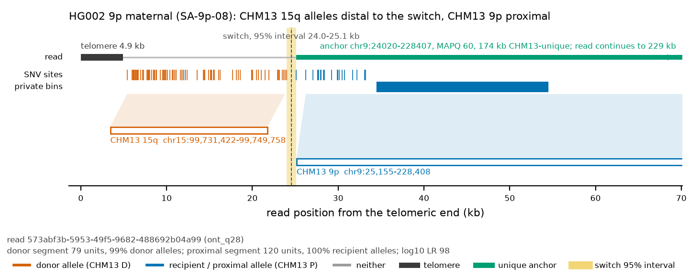
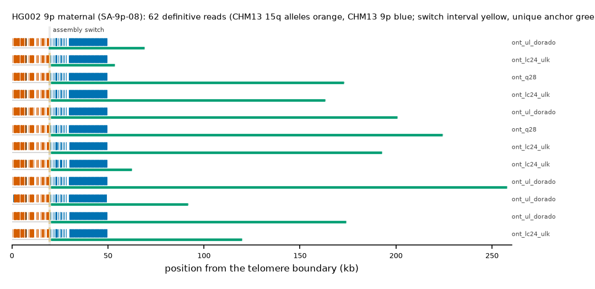

HG002 9p maternal: SA-9p-08
Claim HG002#2#chr9_MATERNAL#L. All claims
- cohort
- HG002 Q100
- individual
- HG002
- haplotype
- maternal
- arm
- 9p
- allele
- SA-9p-08 (foreign)
- model
- donor CHM13 15q, proximal CHM13 9p, recipient CHM13 9p, pattern DP
- claimed end(s)
HG002#2#chr9_MATERNAL#L- assembly switch
- 19,636 bp from the telomere boundary; on CHM13 chr9:23460; own-window projection 19080-20196 bp
- v1 verdict
- confirmed (confirmed)
- definitive tier
- definitive (>= 2 datasets)
- reads
- 74 conclusive switch-concordant, 0 discordant, 0 contradicting, 61 consistent; 62 definitive (ont_duplex,ont_lc24_ulk,ont_q28,ont_r941_recall,ont_ul_dorado)
- by tier
- definitive:62;conclusive_shared_anchor:12;consistent:61
- source
- HG002 Q100 v1.1 public read alignments (16 files; 12 independent datasets after molecule de-duplication)


Conclusive and contradicting reads (112)
78 further reads are consistent (switch test passed, but no terminal telomere, anchor or integrity); they are
listed in reads.tsv.gz. Switch: 95% interval in subtelomere coordinates (kb from the
telomere boundary) and projected on CHM13 9p. Each samtools command prints the read's record
from its public file (CRAM: add the CHM13 v2.0 FASTA as -T).
| read | dataset | tier | length | switch (subtelomere, kb) | switch on CHM13 | donor units / purity | proximal units / purity | anchor (CHM13, MAPQ, unique) | own-assembly best end | fetch |
|---|---|---|---|---|---|---|---|---|---|---|
e0f1c809-80dd-44d4-a7b2-1db3949ce608;f4a566a3-e956-485f-8751-05fde25cca26 | ont_duplex | definitive | 48,288 | 19.1-20.2 | chr9:22905-24020 | 79 / 0.99 | 83 / 1.00 | chr9:24020-46351, 60, 2.2 kb | HG002#2#chr9_MATERNAL#L (99.8%) ✓ | samtoolssamtools view -F 0x900 -X 'https://human-pangenomics.s3.amazonaws.com/T2T/HG002/assemblies/polishing/HG002/v1.1/mapping/ont_r10_duplex/hg002v1.1_ont_r10_duplex.pri.bam' 'https://human-pangenomics.s3.amazonaws.com/T2T/HG002/assemblies/polishing/HG002/v1.1/mapping/ont_r10_duplex/hg002v1.1_ont_r10_duplex.pri.bam.bai' 'chr9_MATERNAL:1-52422' | awk -v r='e0f1c809-80dd-44d4-a7b2-1db3949ce608;f4a566a3-e956-485f-8751-05fde25cca26' '$1==r' |
2a032fba-1936-463d-add4-26cc1f80a29b;637d75ec-9ae8-4472-9994-f592e2082b20 | ont_duplex | definitive | 56,026 | 19.1-20.2 | chr9:22904-24020 | 79 / 0.99 | 118 / 1.00 | chr9:24020-53255, 60, 9.2 kb | HG002#2#chr9_MATERNAL#L (99.7%) ✓ | samtoolssamtools view -F 0x900 -X 'https://human-pangenomics.s3.amazonaws.com/T2T/HG002/assemblies/polishing/HG002/v1.1/mapping/ont_r10_duplex/hg002v1.1_ont_r10_duplex.pri.bam' 'https://human-pangenomics.s3.amazonaws.com/T2T/HG002/assemblies/polishing/HG002/v1.1/mapping/ont_r10_duplex/hg002v1.1_ont_r10_duplex.pri.bam.bai' 'chr9_MATERNAL:1-52422' | awk -v r='2a032fba-1936-463d-add4-26cc1f80a29b;637d75ec-9ae8-4472-9994-f592e2082b20' '$1==r' |
e624fc39-eccc-4524-a2bd-1ebc7567aba5;f26fe8e5-53de-4fe0-8899-8f4b8227f7b7 | ont_duplex | definitive | 59,667 | 19.1-20.2 | chr9:22904-24020 | 79 / 0.99 | 119 / 1.00 | chr9:24020-57773, 60, 13.7 kb | HG002#2#chr9_MATERNAL#L (99.9%) ✓ | samtoolssamtools view -F 0x900 -X 'https://human-pangenomics.s3.amazonaws.com/T2T/HG002/assemblies/polishing/HG002/v1.1/mapping/ont_r10_duplex/hg002v1.1_ont_r10_duplex.pri.bam' 'https://human-pangenomics.s3.amazonaws.com/T2T/HG002/assemblies/polishing/HG002/v1.1/mapping/ont_r10_duplex/hg002v1.1_ont_r10_duplex.pri.bam.bai' 'chr9_MATERNAL:1-52422' | awk -v r='e624fc39-eccc-4524-a2bd-1ebc7567aba5;f26fe8e5-53de-4fe0-8899-8f4b8227f7b7' '$1==r' |
bfe86476-a57f-40df-8e2f-74d9a5235940;6743edc6-209f-433c-aa63-23141bc49844 | ont_duplex | definitive | 79,331 | 19.1-20.2 | chr9:22903-24020 | 79 / 0.99 | 119 / 1.00 | chr9:24020-54171, 60, 10.1 kb | HG002#2#chr9_MATERNAL#L (99.9%) ✓ | samtoolssamtools view -F 0x900 -X 'https://human-pangenomics.s3.amazonaws.com/T2T/HG002/assemblies/polishing/HG002/v1.1/mapping/ont_r10_duplex/hg002v1.1_ont_r10_duplex.pri.bam' 'https://human-pangenomics.s3.amazonaws.com/T2T/HG002/assemblies/polishing/HG002/v1.1/mapping/ont_r10_duplex/hg002v1.1_ont_r10_duplex.pri.bam.bai' 'chr9_MATERNAL:1-52422' | awk -v r='bfe86476-a57f-40df-8e2f-74d9a5235940;6743edc6-209f-433c-aa63-23141bc49844' '$1==r' |
9cfac07a-f5c3-4b63-95db-086bee870e67;918f21e3-0f4f-44c7-bca0-5c98e1dc16b5 | ont_duplex | definitive | 46,229 | 19.1-20.2 | chr9:22904-24020 | 79 / 0.99 | 77 / 1.00 | chr9:24020-45226, 60, 1.1 kb | HG002#2#chr9_MATERNAL#L (99.9%) ✓ | samtoolssamtools view -F 0x900 -X 'https://human-pangenomics.s3.amazonaws.com/T2T/HG002/assemblies/polishing/HG002/v1.1/mapping/ont_r10_duplex/hg002v1.1_ont_r10_duplex.pri.bam' 'https://human-pangenomics.s3.amazonaws.com/T2T/HG002/assemblies/polishing/HG002/v1.1/mapping/ont_r10_duplex/hg002v1.1_ont_r10_duplex.pri.bam.bai' 'chr9_MATERNAL:1-52422' | awk -v r='9cfac07a-f5c3-4b63-95db-086bee870e67;918f21e3-0f4f-44c7-bca0-5c98e1dc16b5' '$1==r' |
95bf57d7-737b-43ae-bf7a-4ed743a5e14e;9398c5f1-4363-41e1-a576-91261b3e83fe | ont_duplex | definitive | 52,838 | 19.1-20.2 | chr9:22905-24020 | 79 / 0.99 | 119 / 1.00 | chr9:24020-55726, 60, 11.6 kb | HG002#2#chr9_MATERNAL#L (99.9%) ✓ | samtoolssamtools view -F 0x900 -X 'https://human-pangenomics.s3.amazonaws.com/T2T/HG002/assemblies/polishing/HG002/v1.1/mapping/ont_r10_duplex/hg002v1.1_ont_r10_duplex.pri.bam' 'https://human-pangenomics.s3.amazonaws.com/T2T/HG002/assemblies/polishing/HG002/v1.1/mapping/ont_r10_duplex/hg002v1.1_ont_r10_duplex.pri.bam.bai' 'chr9_MATERNAL:1-52422' | awk -v r='95bf57d7-737b-43ae-bf7a-4ed743a5e14e;9398c5f1-4363-41e1-a576-91261b3e83fe' '$1==r' |
3d046e9d-bd6a-40c2-a824-8292bc1ddd67 | ont_lc24_ulk | definitive | 68,302 | 19.1-20.2 | chr9:22904-24020 | 79 / 0.99 | 119 / 1.00 | chr9:24020-66132, 60, 22.0 kb | HG002#2#chr9_MATERNAL#L (99.7%) ✓ | samtoolssamtools view -F 0x900 -X 'https://human-pangenomics.s3.amazonaws.com/T2T/HG002/assemblies/polishing/HG002/v1.1/mapping/ont_lc24_ulk/hg002v1.1_ont_lc24_ulk.pri.bam' 'https://human-pangenomics.s3.amazonaws.com/T2T/HG002/assemblies/polishing/HG002/v1.1/mapping/ont_lc24_ulk/hg002v1.1_ont_lc24_ulk.pri.bam.bai' 'chr9_MATERNAL:1-52422' | awk -v r='3d046e9d-bd6a-40c2-a824-8292bc1ddd67' '$1==r' |
d5184fd5-4ceb-45b2-aa42-4c09a7403103 | ont_lc24_ulk | definitive | 59,097 | 19.1-20.2 | chr9:22911-24020 | 79 / 0.99 | 120 / 1.00 | chr9:24020-57294, 60, 13.2 kb | HG002#2#chr9_MATERNAL#L (99.7%) ✓ | samtoolssamtools view -F 0x900 -X 'https://human-pangenomics.s3.amazonaws.com/T2T/HG002/assemblies/polishing/HG002/v1.1/mapping/ont_lc24_ulk/hg002v1.1_ont_lc24_ulk.pri.bam' 'https://human-pangenomics.s3.amazonaws.com/T2T/HG002/assemblies/polishing/HG002/v1.1/mapping/ont_lc24_ulk/hg002v1.1_ont_lc24_ulk.pri.bam.bai' 'chr9_MATERNAL:1-52422' | awk -v r='d5184fd5-4ceb-45b2-aa42-4c09a7403103' '$1==r' |
9978a845-7bd8-4f49-ba24-a17b7679f7d0 | ont_lc24_ulk | definitive | 198,190 | 19.1-20.2 | chr9:22902-24020 | 79 / 0.99 | 119 / 1.00 | chr9:24020-196799, 60, 146.6 kb | HG002#2#chr9_MATERNAL#L (99.8%) ✓ | samtoolssamtools view -F 0x900 -X 'https://human-pangenomics.s3.amazonaws.com/T2T/HG002/assemblies/polishing/HG002/v1.1/mapping/ont_lc24_ulk/hg002v1.1_ont_lc24_ulk.pri.bam' 'https://human-pangenomics.s3.amazonaws.com/T2T/HG002/assemblies/polishing/HG002/v1.1/mapping/ont_lc24_ulk/hg002v1.1_ont_lc24_ulk.pri.bam.bai' 'chr9_MATERNAL:1-52422' | awk -v r='9978a845-7bd8-4f49-ba24-a17b7679f7d0' '$1==r' |
96a1b17d-b1b3-4a58-8c8b-f83307212d20 | ont_lc24_ulk | definitive | 168,410 | 19.1-20.2 | chr9:22904-24020 | 79 / 0.97 | 120 / 1.00 | chr9:24020-167278, 60, 117.1 kb | HG002#2#chr9_MATERNAL#L (99.7%) ✓ | samtoolssamtools view -F 0x900 -X 'https://human-pangenomics.s3.amazonaws.com/T2T/HG002/assemblies/polishing/HG002/v1.1/mapping/ont_lc24_ulk/hg002v1.1_ont_lc24_ulk.pri.bam' 'https://human-pangenomics.s3.amazonaws.com/T2T/HG002/assemblies/polishing/HG002/v1.1/mapping/ont_lc24_ulk/hg002v1.1_ont_lc24_ulk.pri.bam.bai' 'chr9_MATERNAL:1-52422' | awk -v r='96a1b17d-b1b3-4a58-8c8b-f83307212d20' '$1==r' |
05d1bf80-b1cc-40bd-9fe8-7f39f702e774 | ont_lc24_ulk | definitive | 125,940 | 19.1-20.2 | chr9:22908-24020 | 79 / 0.99 | 119 / 1.00 | chr9:24020-123657, 60, 79.6 kb | HG002#2#chr9_MATERNAL#L (99.8%) ✓ | samtoolssamtools view -F 0x900 -X 'https://human-pangenomics.s3.amazonaws.com/T2T/HG002/assemblies/polishing/HG002/v1.1/mapping/ont_lc24_ulk/hg002v1.1_ont_lc24_ulk.pri.bam' 'https://human-pangenomics.s3.amazonaws.com/T2T/HG002/assemblies/polishing/HG002/v1.1/mapping/ont_lc24_ulk/hg002v1.1_ont_lc24_ulk.pri.bam.bai' 'chr9_MATERNAL:1-52422' | awk -v r='05d1bf80-b1cc-40bd-9fe8-7f39f702e774' '$1==r' |
baf59cad-d8bb-4602-a78d-f285867b3d63 | ont_lc24_ulk | definitive | 102,744 | 19.1-20.2 | chr9:22908-24020 | 78 / 0.99 | 120 / 1.00 | chr9:24020-100964, 60, 56.9 kb | HG002#2#chr9_MATERNAL#L (99.1%) ✓ | samtoolssamtools view -F 0x900 -X 'https://human-pangenomics.s3.amazonaws.com/T2T/HG002/assemblies/polishing/HG002/v1.1/mapping/ont_lc24_ulk/hg002v1.1_ont_lc24_ulk.pri.bam' 'https://human-pangenomics.s3.amazonaws.com/T2T/HG002/assemblies/polishing/HG002/v1.1/mapping/ont_lc24_ulk/hg002v1.1_ont_lc24_ulk.pri.bam.bai' 'chr9_MATERNAL:1-52422' | awk -v r='baf59cad-d8bb-4602-a78d-f285867b3d63' '$1==r' |
9afd2b93-cb8d-4e57-a11e-bc3f75403ad3 | ont_lc24_ulk | definitive | 88,196 | 19.1-20.2 | chr9:22904-24020 | 79 / 0.99 | 119 / 1.00 | chr9:24020-85305, 60, 41.2 kb | HG002#2#chr9_MATERNAL#L (99.6%) ✓ | samtoolssamtools view -F 0x900 -X 'https://human-pangenomics.s3.amazonaws.com/T2T/HG002/assemblies/polishing/HG002/v1.1/mapping/ont_lc24_ulk/hg002v1.1_ont_lc24_ulk.pri.bam' 'https://human-pangenomics.s3.amazonaws.com/T2T/HG002/assemblies/polishing/HG002/v1.1/mapping/ont_lc24_ulk/hg002v1.1_ont_lc24_ulk.pri.bam.bai' 'chr9_MATERNAL:1-52422' | awk -v r='9afd2b93-cb8d-4e57-a11e-bc3f75403ad3' '$1==r' |
ea5e3f01-fb41-4418-acce-905587962ecc | ont_lc24_ulk | definitive | 184,100 | 19.1-20.2 | chr9:22904-24020 | 78 / 0.99 | 120 / 1.00 | chr9:24020-182295, 60, 132.1 kb | HG002#2#chr9_MATERNAL#L (99.6%) ✓ | samtoolssamtools view -F 0x900 -X 'https://human-pangenomics.s3.amazonaws.com/T2T/HG002/assemblies/polishing/HG002/v1.1/mapping/ont_lc24_ulk/hg002v1.1_ont_lc24_ulk.pri.bam' 'https://human-pangenomics.s3.amazonaws.com/T2T/HG002/assemblies/polishing/HG002/v1.1/mapping/ont_lc24_ulk/hg002v1.1_ont_lc24_ulk.pri.bam.bai' 'chr9_MATERNAL:1-52422' | awk -v r='ea5e3f01-fb41-4418-acce-905587962ecc' '$1==r' |
573abf3b-5953-49f5-9682-488692b04a99 | ont_q28 | definitive | 229,254 | 19.1-20.2 | chr9:22904-24020 | 79 / 0.99 | 120 / 1.00 | chr9:24020-228407, 60, 173.9 kb | HG002#2#chr9_MATERNAL#L (99.6%) ✓ | samtoolssamtools view -F 0x900 -X 'https://human-pangenomics.s3.amazonaws.com/T2T/HG002/assemblies/polishing/HG002/v1.1/mapping/ont_epi2me_q28/hg002v1.1_ont_epi2me_q28.pri.bam' 'https://human-pangenomics.s3.amazonaws.com/T2T/HG002/assemblies/polishing/HG002/v1.1/mapping/ont_epi2me_q28/hg002v1.1_ont_epi2me_q28.pri.bam.bai' 'chr9_MATERNAL:1-52422' | awk -v r='573abf3b-5953-49f5-9682-488692b04a99' '$1==r' |
8f77a3e6-5f5d-4e2c-b18b-3770d4a42c76 | ont_q28 | definitive | 175,851 | 19.1-20.2 | chr9:22904-24020 | 79 / 0.99 | 120 / 1.00 | chr9:24020-176940, 60, 126.8 kb | HG002#2#chr9_MATERNAL#L (99.9%) ✓ | samtoolssamtools view -F 0x900 -X 'https://human-pangenomics.s3.amazonaws.com/T2T/HG002/assemblies/polishing/HG002/v1.1/mapping/ont_epi2me_q28/hg002v1.1_ont_epi2me_q28.pri.bam' 'https://human-pangenomics.s3.amazonaws.com/T2T/HG002/assemblies/polishing/HG002/v1.1/mapping/ont_epi2me_q28/hg002v1.1_ont_epi2me_q28.pri.bam.bai' 'chr9_MATERNAL:1-52422' | awk -v r='8f77a3e6-5f5d-4e2c-b18b-3770d4a42c76' '$1==r' |
ce8d65c3-977c-49de-b2e9-6ed7096e2135 | ont_q28 | definitive | 163,818 | 19.1-20.2 | chr9:22904-24020 | 78 / 0.99 | 119 / 1.00 | chr9:24020-164620, 60, 114.4 kb | HG002#2#chr9_MATERNAL#L (99.8%) ✓ | samtoolssamtools view -F 0x900 -X 'https://human-pangenomics.s3.amazonaws.com/T2T/HG002/assemblies/polishing/HG002/v1.1/mapping/ont_epi2me_q28/hg002v1.1_ont_epi2me_q28.pri.bam' 'https://human-pangenomics.s3.amazonaws.com/T2T/HG002/assemblies/polishing/HG002/v1.1/mapping/ont_epi2me_q28/hg002v1.1_ont_epi2me_q28.pri.bam.bai' 'chr9_MATERNAL:1-52422' | awk -v r='ce8d65c3-977c-49de-b2e9-6ed7096e2135' '$1==r' |
f1e5da3f-ddf9-47ef-ab78-63bb0a68c55f | ont_q28 | definitive | 111,233 | 19.1-20.2 | chr9:22904-24020 | 79 / 0.99 | 119 / 1.00 | chr9:24020-110694, 60, 66.6 kb | HG002#2#chr9_MATERNAL#L (99.5%) ✓ | samtoolssamtools view -F 0x900 -X 'https://human-pangenomics.s3.amazonaws.com/T2T/HG002/assemblies/polishing/HG002/v1.1/mapping/ont_epi2me_q28/hg002v1.1_ont_epi2me_q28.pri.bam' 'https://human-pangenomics.s3.amazonaws.com/T2T/HG002/assemblies/polishing/HG002/v1.1/mapping/ont_epi2me_q28/hg002v1.1_ont_epi2me_q28.pri.bam.bai' 'chr9_MATERNAL:1-52422' | awk -v r='f1e5da3f-ddf9-47ef-ab78-63bb0a68c55f' '$1==r' |
955f0acf-1f7b-4299-ad30-894d18837468 | ont_q28 | definitive | 57,612 | 18.9-20.2 | chr9:22750-24020 | 77 / 0.99 | 119 / 1.00 | chr9:24020-55534, 60, 11.4 kb | HG002#2#chr9_MATERNAL#L (99.8%) ✓ | samtoolssamtools view -F 0x900 -X 'https://human-pangenomics.s3.amazonaws.com/T2T/HG002/assemblies/polishing/HG002/v1.1/mapping/ont_epi2me_q28/hg002v1.1_ont_epi2me_q28.pri.bam' 'https://human-pangenomics.s3.amazonaws.com/T2T/HG002/assemblies/polishing/HG002/v1.1/mapping/ont_epi2me_q28/hg002v1.1_ont_epi2me_q28.pri.bam.bai' 'chr9_MATERNAL:1-52422' | awk -v r='955f0acf-1f7b-4299-ad30-894d18837468' '$1==r' |
3c8449c7-3863-4184-9b04-4508eb9fc290 | ont_q28 | definitive | 56,576 | 19.1-20.2 | chr9:22904-24020 | 79 / 0.99 | 119 / 1.00 | chr9:24020-57589, 60, 13.5 kb | HG002#2#chr9_MATERNAL#L (99.8%) ✓ | samtoolssamtools view -F 0x900 -X 'https://human-pangenomics.s3.amazonaws.com/T2T/HG002/assemblies/polishing/HG002/v1.1/mapping/ont_epi2me_q28/hg002v1.1_ont_epi2me_q28.pri.bam' 'https://human-pangenomics.s3.amazonaws.com/T2T/HG002/assemblies/polishing/HG002/v1.1/mapping/ont_epi2me_q28/hg002v1.1_ont_epi2me_q28.pri.bam.bai' 'chr9_MATERNAL:1-52422' | awk -v r='3c8449c7-3863-4184-9b04-4508eb9fc290' '$1==r' |
bf8e46ef-2ffd-47d7-a815-e51b8db22d25 | ont_q28 | definitive | 72,615 | 19.1-20.2 | chr9:22907-24020 | 79 / 0.99 | 119 / 1.00 | chr9:24020-73783, 60, 29.7 kb | HG002#2#chr9_MATERNAL#L (99.8%) ✓ | samtoolssamtools view -F 0x900 -X 'https://human-pangenomics.s3.amazonaws.com/T2T/HG002/assemblies/polishing/HG002/v1.1/mapping/ont_epi2me_q28/hg002v1.1_ont_epi2me_q28.pri.bam' 'https://human-pangenomics.s3.amazonaws.com/T2T/HG002/assemblies/polishing/HG002/v1.1/mapping/ont_epi2me_q28/hg002v1.1_ont_epi2me_q28.pri.bam.bai' 'chr9_MATERNAL:1-52422' | awk -v r='bf8e46ef-2ffd-47d7-a815-e51b8db22d25' '$1==r' |
91f863e1-3caf-4563-b79a-1ff9495289d1 | ont_q28 | definitive | 87,395 | 19.1-20.2 | chr9:22905-24020 | 79 / 0.99 | 119 / 1.00 | chr9:24020-89015, 60, 44.9 kb | HG002#2#chr9_MATERNAL#L (99.8%) ✓ | samtoolssamtools view -F 0x900 -X 'https://human-pangenomics.s3.amazonaws.com/T2T/HG002/assemblies/polishing/HG002/v1.1/mapping/ont_epi2me_q28/hg002v1.1_ont_epi2me_q28.pri.bam' 'https://human-pangenomics.s3.amazonaws.com/T2T/HG002/assemblies/polishing/HG002/v1.1/mapping/ont_epi2me_q28/hg002v1.1_ont_epi2me_q28.pri.bam.bai' 'chr9_MATERNAL:1-52422' | awk -v r='91f863e1-3caf-4563-b79a-1ff9495289d1' '$1==r' |
de5637d0-0c27-4232-aae6-14fbb0d55fcc | ont_r941_recall | definitive | 147,298 | 18.9-20.0 | chr9:22909-24020 | 79 / 0.99 | 117 / 1.00 | chr9:24020-144931, 60, 94.8 kb | HG002#2#chr9_MATERNAL#L (98.0%) ✓ | samtoolssamtools view -F 0x900 -X 'https://human-pangenomics.s3.amazonaws.com/T2T/HG002/assemblies/polishing/HG002/v1.1/mapping/ont_methylation_recall_oct2024/03_08_22_R941_HG002.pri.bam' 'https://human-pangenomics.s3.amazonaws.com/T2T/HG002/assemblies/polishing/HG002/v1.1/mapping/ont_methylation_recall_oct2024/03_08_22_R941_HG002.pri.bam.bai' 'chr9_MATERNAL:1-52422' | awk -v r='de5637d0-0c27-4232-aae6-14fbb0d55fcc' '$1==r' |
516d5488-9deb-4856-b8a8-32efa440901d | ont_r941_recall | definitive | 96,759 | 24.1-25.2 | chr9:22921-24020 | 74 / 0.93 | 117 / 1.00 | chr9:24020-95647, 60, 51.5 kb | HG002#2#chr9_MATERNAL#L (94.6%) ✓ | samtoolssamtools view -F 0x900 -X 'https://human-pangenomics.s3.amazonaws.com/T2T/HG002/assemblies/polishing/HG002/v1.1/mapping/ont_methylation_recall_oct2024/03_08_22_R941_HG002.pri.bam' 'https://human-pangenomics.s3.amazonaws.com/T2T/HG002/assemblies/polishing/HG002/v1.1/mapping/ont_methylation_recall_oct2024/03_08_22_R941_HG002.pri.bam.bai' 'chr9_MATERNAL:1-52422' | awk -v r='516d5488-9deb-4856-b8a8-32efa440901d' '$1==r' |
54a9dba5-f9f6-45ea-943d-0fe782b57a56 | ont_r941_recall | definitive | 68,693 | 24.5-27.1 | chr9:22606-25155 | 74 / 0.99 | 117 / 1.00 | chr9:25155-65775, 60, 21.7 kb | HG002#2#chr9_MATERNAL#L (95.6%) ✓ | samtoolssamtools view -F 0x900 -X 'https://human-pangenomics.s3.amazonaws.com/T2T/HG002/assemblies/polishing/HG002/v1.1/mapping/ont_methylation_recall_oct2024/03_08_22_R941_HG002.pri.bam' 'https://human-pangenomics.s3.amazonaws.com/T2T/HG002/assemblies/polishing/HG002/v1.1/mapping/ont_methylation_recall_oct2024/03_08_22_R941_HG002.pri.bam.bai' 'chr9_MATERNAL:1-52422' | awk -v r='54a9dba5-f9f6-45ea-943d-0fe782b57a56' '$1==r' |
045501b8-6f3a-42c5-b1d0-0bacf2b5c4dd | ont_r941_recall | definitive | 54,212 | 25.2-26.4 | chr9:24014-25155 | 74 / 0.99 | 111 / 0.99 | chr9:25155-51981, 60, 7.9 kb | HG002#2#chr9_MATERNAL#L (93.9%) ✓ | samtoolssamtools view -F 0x900 -X 'https://human-pangenomics.s3.amazonaws.com/T2T/HG002/assemblies/polishing/HG002/v1.1/mapping/ont_methylation_recall_oct2024/03_08_22_R941_HG002.pri.bam' 'https://human-pangenomics.s3.amazonaws.com/T2T/HG002/assemblies/polishing/HG002/v1.1/mapping/ont_methylation_recall_oct2024/03_08_22_R941_HG002.pri.bam.bai' 'chr9_MATERNAL:1-52422' | awk -v r='045501b8-6f3a-42c5-b1d0-0bacf2b5c4dd' '$1==r' |
760374b7-fd88-41e1-a10e-ac696d171708 | ont_r941_recall | definitive | 61,226 | 18.8-19.9 | chr9:22916-24020 | 74 / 0.97 | 117 / 0.99 | chr9:24020-65268, 60, 21.2 kb | HG002#2#chr9_MATERNAL#L (94.0%) ✓ | samtoolssamtools view -F 0x900 -X 'https://human-pangenomics.s3.amazonaws.com/T2T/HG002/assemblies/polishing/HG002/v1.1/mapping/ont_methylation_recall_oct2024/03_08_22_R941_HG002.pri.bam' 'https://human-pangenomics.s3.amazonaws.com/T2T/HG002/assemblies/polishing/HG002/v1.1/mapping/ont_methylation_recall_oct2024/03_08_22_R941_HG002.pri.bam.bai' 'chr9_MATERNAL:1-52422' | awk -v r='760374b7-fd88-41e1-a10e-ac696d171708' '$1==r' |
6613f548-4395-4f92-92f7-823287d28e5b | ont_r941_recall | definitive | 96,878 | 20.9-22.0 | chr9:22917-24020 | 75 / 0.92 | 117 / 0.99 | chr9:24020-94003, 60, 49.9 kb | HG002#2#chr9_MATERNAL#L (94.1%) ✓ | samtoolssamtools view -F 0x900 -X 'https://human-pangenomics.s3.amazonaws.com/T2T/HG002/assemblies/polishing/HG002/v1.1/mapping/ont_methylation_recall_oct2024/03_08_22_R941_HG002.pri.bam' 'https://human-pangenomics.s3.amazonaws.com/T2T/HG002/assemblies/polishing/HG002/v1.1/mapping/ont_methylation_recall_oct2024/03_08_22_R941_HG002.pri.bam.bai' 'chr9_MATERNAL:1-52422' | awk -v r='6613f548-4395-4f92-92f7-823287d28e5b' '$1==r' |
bf65200d-136e-443a-98e5-c212f4590fa0 | ont_r941_recall | definitive | 79,339 | 18.7-21.1 | chr9:22796-25155 | 74 / 0.96 | 114 / 1.00 | chr9:25158-76291, 60, 32.2 kb | HG002#2#chr9_MATERNAL#L (93.8%) ✓ | samtoolssamtools view -F 0x900 -X 'https://human-pangenomics.s3.amazonaws.com/T2T/HG002/assemblies/polishing/HG002/v1.1/mapping/ont_methylation_recall_oct2024/03_08_22_R941_HG002.pri.bam' 'https://human-pangenomics.s3.amazonaws.com/T2T/HG002/assemblies/polishing/HG002/v1.1/mapping/ont_methylation_recall_oct2024/03_08_22_R941_HG002.pri.bam.bai' 'chr9_MATERNAL:1-52422' | awk -v r='bf65200d-136e-443a-98e5-c212f4590fa0' '$1==r' |
72483347-b035-4460-80ca-2d75661c373d | ont_r941_recall | definitive | 93,084 | 20.7-21.9 | chr9:22781-24020 | 73 / 0.95 | 114 / 0.97 | chr9:24020-92391, 60, 48.3 kb | HG002#2#chr9_MATERNAL#L (91.2%) ✓ | samtoolssamtools view -F 0x900 -X 'https://human-pangenomics.s3.amazonaws.com/T2T/HG002/assemblies/polishing/HG002/v1.1/mapping/ont_methylation_recall_oct2024/03_08_22_R941_HG002.pri.bam' 'https://human-pangenomics.s3.amazonaws.com/T2T/HG002/assemblies/polishing/HG002/v1.1/mapping/ont_methylation_recall_oct2024/03_08_22_R941_HG002.pri.bam.bai' 'chr9_MATERNAL:1-52422' | awk -v r='72483347-b035-4460-80ca-2d75661c373d' '$1==r' |
fb89a684-e7bc-4aab-b0c0-3b56ac06b353 | ont_r941_recall | definitive | 136,867 | 18.8-19.9 | chr9:22945-24020 | 71 / 0.94 | 118 / 1.00 | chr9:24020-136362, 60, 89.9 kb | HG002#2#chr9_MATERNAL#L (93.0%) ✓ | samtoolssamtools view -F 0x900 -X 'https://human-pangenomics.s3.amazonaws.com/T2T/HG002/assemblies/polishing/HG002/v1.1/mapping/ont_methylation_recall_oct2024/03_08_22_R941_HG002.pri.bam' 'https://human-pangenomics.s3.amazonaws.com/T2T/HG002/assemblies/polishing/HG002/v1.1/mapping/ont_methylation_recall_oct2024/03_08_22_R941_HG002.pri.bam.bai' 'chr9_MATERNAL:1-52422' | awk -v r='fb89a684-e7bc-4aab-b0c0-3b56ac06b353' '$1==r' |
7f6d888f-4c3f-4b04-a10d-c1f1caffa110 | ont_ul_dorado | definitive | 176,075 | 18.9-21.3 | chr9:22757-25155 | 76 / 0.99 | 118 / 1.00 | chr9:25155-177563, 60, 127.4 kb | HG002#2#chr9_MATERNAL#L (99.2%) ✓ | samtoolssamtools view -F 0x900 -X 'https://human-pangenomics.s3.amazonaws.com/T2T/HG002/assemblies/polishing/HG002/v1.1/mapping/ont_r10_ul_dorado/hg002v1.1_ont_r10_ul_dorado.pri.bam' 'https://human-pangenomics.s3.amazonaws.com/T2T/HG002/assemblies/polishing/HG002/v1.1/mapping/ont_r10_ul_dorado/hg002v1.1_ont_r10_ul_dorado.pri.bam.bai' 'chr9_MATERNAL:1-52422' | awk -v r='7f6d888f-4c3f-4b04-a10d-c1f1caffa110' '$1==r' |
be1a4df1-a790-45a3-a97c-53684a0343cc | ont_ul_dorado | definitive | 131,232 | 19.1-20.2 | chr9:22904-24020 | 79 / 0.99 | 119 / 1.00 | chr9:24020-132480, 60, 88.4 kb | HG002#2#chr9_MATERNAL#L (99.2%) ✓ | samtoolssamtools view -F 0x900 -X 'https://human-pangenomics.s3.amazonaws.com/T2T/HG002/assemblies/polishing/HG002/v1.1/mapping/ont_r10_ul_dorado/hg002v1.1_ont_r10_ul_dorado.pri.bam' 'https://human-pangenomics.s3.amazonaws.com/T2T/HG002/assemblies/polishing/HG002/v1.1/mapping/ont_r10_ul_dorado/hg002v1.1_ont_r10_ul_dorado.pri.bam.bai' 'chr9_MATERNAL:1-52422' | awk -v r='be1a4df1-a790-45a3-a97c-53684a0343cc' '$1==r' |
a8007095-ada8-49c1-b545-504a97a000f8 | ont_ul_dorado | definitive | 178,491 | 19.1-20.2 | chr9:22905-24020 | 79 / 0.99 | 119 / 1.00 | chr9:24020-179996, 60, 129.8 kb | HG002#2#chr9_MATERNAL#L (99.3%) ✓ | samtoolssamtools view -F 0x900 -X 'https://human-pangenomics.s3.amazonaws.com/T2T/HG002/assemblies/polishing/HG002/v1.1/mapping/ont_r10_ul_dorado/hg002v1.1_ont_r10_ul_dorado.pri.bam' 'https://human-pangenomics.s3.amazonaws.com/T2T/HG002/assemblies/polishing/HG002/v1.1/mapping/ont_r10_ul_dorado/hg002v1.1_ont_r10_ul_dorado.pri.bam.bai' 'chr9_MATERNAL:1-52422' | awk -v r='a8007095-ada8-49c1-b545-504a97a000f8' '$1==r' |
8132194a-82ff-4e03-8c02-fcee62cfc593 | ont_ul_dorado | definitive | 137,154 | 19.0-20.1 | chr9:22905-24020 | 79 / 0.99 | 117 / 0.99 | chr9:24020-138890, 60, 89.9 kb | HG002#2#chr9_MATERNAL#L (98.6%) ✓ | samtoolssamtools view -F 0x900 -X 'https://human-pangenomics.s3.amazonaws.com/T2T/HG002/assemblies/polishing/HG002/v1.1/mapping/ont_r10_ul_dorado/hg002v1.1_ont_r10_ul_dorado.pri.bam' 'https://human-pangenomics.s3.amazonaws.com/T2T/HG002/assemblies/polishing/HG002/v1.1/mapping/ont_r10_ul_dorado/hg002v1.1_ont_r10_ul_dorado.pri.bam.bai' 'chr9_MATERNAL:1-52422' | awk -v r='8132194a-82ff-4e03-8c02-fcee62cfc593' '$1==r' |
0f2224ee-fdd4-435a-baf6-0be7e536bf44 | ont_ul_dorado | definitive | 253,814 | 19.1-20.2 | chr9:22905-24020 | 79 / 0.99 | 119 / 1.00 | chr9:24020-256029, 60, 201.5 kb | HG002#2#chr9_MATERNAL#L (99.4%) ✓ | samtoolssamtools view -F 0x900 -X 'https://human-pangenomics.s3.amazonaws.com/T2T/HG002/assemblies/polishing/HG002/v1.1/mapping/ont_r10_ul_dorado/hg002v1.1_ont_r10_ul_dorado.pri.bam' 'https://human-pangenomics.s3.amazonaws.com/T2T/HG002/assemblies/polishing/HG002/v1.1/mapping/ont_r10_ul_dorado/hg002v1.1_ont_r10_ul_dorado.pri.bam.bai' 'chr9_MATERNAL:1-52422' | awk -v r='0f2224ee-fdd4-435a-baf6-0be7e536bf44' '$1==r' |
7f6f080c-0a08-40c2-88bf-b31b40eee627 | ont_ul_dorado | definitive | 188,934 | 18.8-19.9 | chr9:22907-24020 | 77 / 0.97 | 116 / 0.98 | chr9:24020-191865, 60, 141.7 kb | HG002#2#chr9_MATERNAL#L (96.5%) ✓ | samtoolssamtools view -F 0x900 -X 'https://human-pangenomics.s3.amazonaws.com/T2T/HG002/assemblies/polishing/HG002/v1.1/mapping/ont_r10_ul_dorado/hg002v1.1_ont_r10_ul_dorado.pri.bam' 'https://human-pangenomics.s3.amazonaws.com/T2T/HG002/assemblies/polishing/HG002/v1.1/mapping/ont_r10_ul_dorado/hg002v1.1_ont_r10_ul_dorado.pri.bam.bai' 'chr9_MATERNAL:1-52422' | awk -v r='7f6f080c-0a08-40c2-88bf-b31b40eee627' '$1==r' |
5c7f63ba-6ec0-4f88-b959-7441ee748f69 | ont_ul_dorado | definitive | 54,967 | 19.0-20.2 | chr9:22895-24020 | 79 / 0.99 | 119 / 1.00 | chr9:24020-56696, 60, 12.6 kb | HG002#2#chr9_MATERNAL#L (98.9%) ✓ | samtoolssamtools view -F 0x900 -X 'https://human-pangenomics.s3.amazonaws.com/T2T/HG002/assemblies/polishing/HG002/v1.1/mapping/ont_r10_ul_dorado/hg002v1.1_ont_r10_ul_dorado.pri.bam' 'https://human-pangenomics.s3.amazonaws.com/T2T/HG002/assemblies/polishing/HG002/v1.1/mapping/ont_r10_ul_dorado/hg002v1.1_ont_r10_ul_dorado.pri.bam.bai' 'chr9_MATERNAL:1-52422' | awk -v r='5c7f63ba-6ec0-4f88-b959-7441ee748f69' '$1==r' |
9db2fa66-3199-4aed-95c2-933db32fbb97 | ont_ul_dorado | definitive | 125,245 | 19.0-20.1 | chr9:22900-24020 | 74 / 0.97 | 118 / 0.99 | chr9:24020-122806, 60, 78.7 kb | HG002#2#chr9_MATERNAL#L (92.7%) ✓ | samtoolssamtools view -F 0x900 -X 'https://human-pangenomics.s3.amazonaws.com/T2T/HG002/assemblies/polishing/HG002/v1.1/mapping/ont_r10_ul_dorado/hg002v1.1_ont_r10_ul_dorado.pri.bam' 'https://human-pangenomics.s3.amazonaws.com/T2T/HG002/assemblies/polishing/HG002/v1.1/mapping/ont_r10_ul_dorado/hg002v1.1_ont_r10_ul_dorado.pri.bam.bai' 'chr9_MATERNAL:1-52422' | awk -v r='9db2fa66-3199-4aed-95c2-933db32fbb97' '$1==r' |
12dbf8f2-9bee-44ac-a02b-049515c7fd72 | ont_ul_dorado | definitive | 52,491 | 19.0-22.1 | chr9:22902-25985 | 79 / 0.99 | 119 / 0.99 | chr9:25985-54283, 60, 10.2 kb | HG002#2#chr9_MATERNAL#L (98.5%) ✓ | samtoolssamtools view -F 0x900 -X 'https://human-pangenomics.s3.amazonaws.com/T2T/HG002/assemblies/polishing/HG002/v1.1/mapping/ont_r10_ul_dorado/hg002v1.1_ont_r10_ul_dorado.pri.bam' 'https://human-pangenomics.s3.amazonaws.com/T2T/HG002/assemblies/polishing/HG002/v1.1/mapping/ont_r10_ul_dorado/hg002v1.1_ont_r10_ul_dorado.pri.bam.bai' 'chr9_MATERNAL:1-52422' | awk -v r='12dbf8f2-9bee-44ac-a02b-049515c7fd72' '$1==r' |
d4a7ac48-3259-4871-b593-a752e30dd103 | ont_ul_dorado | definitive | 70,997 | 18.9-19.1 | chr9:22752-22904 | 78 / 0.99 | 121 / 1.00 | chr9:22906-72773, 60, 28.7 kb | HG002#2#chr9_MATERNAL#L (99.2%) ✓ | samtoolssamtools view -F 0x900 -X 'https://human-pangenomics.s3.amazonaws.com/T2T/HG002/assemblies/polishing/HG002/v1.1/mapping/ont_r10_ul_dorado/hg002v1.1_ont_r10_ul_dorado.pri.bam' 'https://human-pangenomics.s3.amazonaws.com/T2T/HG002/assemblies/polishing/HG002/v1.1/mapping/ont_r10_ul_dorado/hg002v1.1_ont_r10_ul_dorado.pri.bam.bai' 'chr9_MATERNAL:1-52422' | awk -v r='d4a7ac48-3259-4871-b593-a752e30dd103' '$1==r' |
915fbdf6-4c9f-4bf7-bc10-8df3bbcb453a | ont_ul_dorado | definitive | 70,157 | 19.1-20.2 | chr9:22903-24020 | 77 / 0.99 | 119 / 1.00 | chr9:24020-71858, 60, 27.8 kb | HG002#2#chr9_MATERNAL#L (99.3%) ✓ | samtoolssamtools view -F 0x900 -X 'https://human-pangenomics.s3.amazonaws.com/T2T/HG002/assemblies/polishing/HG002/v1.1/mapping/ont_r10_ul_dorado/hg002v1.1_ont_r10_ul_dorado.pri.bam' 'https://human-pangenomics.s3.amazonaws.com/T2T/HG002/assemblies/polishing/HG002/v1.1/mapping/ont_r10_ul_dorado/hg002v1.1_ont_r10_ul_dorado.pri.bam.bai' 'chr9_MATERNAL:1-52422' | awk -v r='915fbdf6-4c9f-4bf7-bc10-8df3bbcb453a' '$1==r' |
4156b9f2-45be-4df1-bb11-8d610b71189b | ont_ul_dorado | definitive | 56,645 | 19.1-20.2 | chr9:22904-24020 | 77 / 0.99 | 118 / 1.00 | chr9:24020-58701, 60, 14.6 kb | HG002#2#chr9_MATERNAL#L (99.2%) ✓ | samtoolssamtools view -F 0x900 -X 'https://human-pangenomics.s3.amazonaws.com/T2T/HG002/assemblies/polishing/HG002/v1.1/mapping/ont_r10_ul_dorado/hg002v1.1_ont_r10_ul_dorado.pri.bam' 'https://human-pangenomics.s3.amazonaws.com/T2T/HG002/assemblies/polishing/HG002/v1.1/mapping/ont_r10_ul_dorado/hg002v1.1_ont_r10_ul_dorado.pri.bam.bai' 'chr9_MATERNAL:1-52422' | awk -v r='4156b9f2-45be-4df1-bb11-8d610b71189b' '$1==r' |
f9cfbee0-d46b-4594-a382-c8dc13f5c2da | ont_ul_dorado | definitive | 79,211 | 19.1-20.2 | chr9:22902-24020 | 78 / 0.99 | 119 / 1.00 | chr9:24020-81381, 60, 37.3 kb | HG002#2#chr9_MATERNAL#L (99.1%) ✓ | samtoolssamtools view -F 0x900 -X 'https://human-pangenomics.s3.amazonaws.com/T2T/HG002/assemblies/polishing/HG002/v1.1/mapping/ont_r10_ul_dorado/hg002v1.1_ont_r10_ul_dorado.pri.bam' 'https://human-pangenomics.s3.amazonaws.com/T2T/HG002/assemblies/polishing/HG002/v1.1/mapping/ont_r10_ul_dorado/hg002v1.1_ont_r10_ul_dorado.pri.bam.bai' 'chr9_MATERNAL:1-52422' | awk -v r='f9cfbee0-d46b-4594-a382-c8dc13f5c2da' '$1==r' |
255c2658-eced-4d99-a9ba-5c99f2722f0f | ont_ul_dorado | definitive | 232,993 | 19.0-20.2 | chr9:22904-24020 | 77 / 0.99 | 119 / 1.00 | chr9:24020-235392, 60, 180.9 kb | HG002#2#chr9_MATERNAL#L (99.3%) ✓ | samtoolssamtools view -F 0x900 -X 'https://human-pangenomics.s3.amazonaws.com/T2T/HG002/assemblies/polishing/HG002/v1.1/mapping/ont_r10_ul_dorado/hg002v1.1_ont_r10_ul_dorado.pri.bam' 'https://human-pangenomics.s3.amazonaws.com/T2T/HG002/assemblies/polishing/HG002/v1.1/mapping/ont_r10_ul_dorado/hg002v1.1_ont_r10_ul_dorado.pri.bam.bai' 'chr9_MATERNAL:1-52422' | awk -v r='255c2658-eced-4d99-a9ba-5c99f2722f0f' '$1==r' |
05655da3-b49b-4fea-8441-ce8d4ee6afbb | ont_ul_dorado | definitive | 172,565 | 20.5-21.6 | chr9:22904-24020 | 77 / 0.99 | 117 / 1.00 | chr9:24020-174917, 60, 124.7 kb | HG002#2#chr9_MATERNAL#L (98.2%) ✓ | samtoolssamtools view -F 0x900 -X 'https://human-pangenomics.s3.amazonaws.com/T2T/HG002/assemblies/polishing/HG002/v1.1/mapping/ont_r10_ul_dorado/hg002v1.1_ont_r10_ul_dorado.pri.bam' 'https://human-pangenomics.s3.amazonaws.com/T2T/HG002/assemblies/polishing/HG002/v1.1/mapping/ont_r10_ul_dorado/hg002v1.1_ont_r10_ul_dorado.pri.bam.bai' 'chr9_MATERNAL:1-52422' | awk -v r='05655da3-b49b-4fea-8441-ce8d4ee6afbb' '$1==r' |
1e0bced0-cbcf-48f4-8a46-808526b3aebc | ont_ul_dorado | definitive | 96,160 | 19.0-21.3 | chr9:22910-25155 | 79 / 0.99 | 118 / 1.00 | chr9:25155-98389, 60, 54.3 kb | HG002#2#chr9_MATERNAL#L (98.5%) ✓ | samtoolssamtools view -F 0x900 -X 'https://human-pangenomics.s3.amazonaws.com/T2T/HG002/assemblies/polishing/HG002/v1.1/mapping/ont_r10_ul_dorado/hg002v1.1_ont_r10_ul_dorado.pri.bam' 'https://human-pangenomics.s3.amazonaws.com/T2T/HG002/assemblies/polishing/HG002/v1.1/mapping/ont_r10_ul_dorado/hg002v1.1_ont_r10_ul_dorado.pri.bam.bai' 'chr9_MATERNAL:1-52422' | awk -v r='1e0bced0-cbcf-48f4-8a46-808526b3aebc' '$1==r' |
915a9cd4-c7bd-4bea-baae-8621807bbf58 | ont_ul_dorado | definitive | 51,134 | 19.0-20.1 | chr9:22904-24020 | 77 / 0.97 | 117 / 1.00 | chr9:24020-53077, 60, 9.0 kb | HG002#2#chr9_MATERNAL#L (97.9%) ✓ | samtoolssamtools view -F 0x900 -X 'https://human-pangenomics.s3.amazonaws.com/T2T/HG002/assemblies/polishing/HG002/v1.1/mapping/ont_r10_ul_dorado/hg002v1.1_ont_r10_ul_dorado.pri.bam' 'https://human-pangenomics.s3.amazonaws.com/T2T/HG002/assemblies/polishing/HG002/v1.1/mapping/ont_r10_ul_dorado/hg002v1.1_ont_r10_ul_dorado.pri.bam.bai' 'chr9_MATERNAL:1-52422' | awk -v r='915a9cd4-c7bd-4bea-baae-8621807bbf58' '$1==r' |
a8ddeb05-d182-493c-963e-28f1ab42ccaa | ont_ul_dorado | definitive | 243,672 | 19.0-22.1 | chr9:22917-25985 | 78 / 0.97 | 119 / 0.99 | chr9:25985-246359, 60, 191.9 kb | HG002#2#chr9_MATERNAL#L (98.9%) ✓ | samtoolssamtools view -F 0x900 -X 'https://human-pangenomics.s3.amazonaws.com/T2T/HG002/assemblies/polishing/HG002/v1.1/mapping/ont_r10_ul_dorado/hg002v1.1_ont_r10_ul_dorado.pri.bam' 'https://human-pangenomics.s3.amazonaws.com/T2T/HG002/assemblies/polishing/HG002/v1.1/mapping/ont_r10_ul_dorado/hg002v1.1_ont_r10_ul_dorado.pri.bam.bai' 'chr9_MATERNAL:1-52422' | awk -v r='a8ddeb05-d182-493c-963e-28f1ab42ccaa' '$1==r' |
714363f0-5e5a-4f95-9efc-97becfd12dbb | ont_ul_dorado | definitive | 93,688 | 19.1-20.2 | chr9:22908-24020 | 79 / 0.97 | 119 / 1.00 | chr9:24020-95777, 60, 51.7 kb | HG002#2#chr9_MATERNAL#L (98.8%) ✓ | samtoolssamtools view -F 0x900 -X 'https://human-pangenomics.s3.amazonaws.com/T2T/HG002/assemblies/polishing/HG002/v1.1/mapping/ont_r10_ul_dorado/hg002v1.1_ont_r10_ul_dorado.pri.bam' 'https://human-pangenomics.s3.amazonaws.com/T2T/HG002/assemblies/polishing/HG002/v1.1/mapping/ont_r10_ul_dorado/hg002v1.1_ont_r10_ul_dorado.pri.bam.bai' 'chr9_MATERNAL:1-52422' | awk -v r='714363f0-5e5a-4f95-9efc-97becfd12dbb' '$1==r' |
5db24c7f-2c67-402c-bc0c-9a5791d633d7 | ont_ul_dorado | definitive | 61,420 | 19.1-20.2 | chr9:22902-24020 | 79 / 0.99 | 119 / 1.00 | chr9:24020-63613, 60, 19.5 kb | HG002#2#chr9_MATERNAL#L (99.3%) ✓ | samtoolssamtools view -F 0x900 -X 'https://human-pangenomics.s3.amazonaws.com/T2T/HG002/assemblies/polishing/HG002/v1.1/mapping/ont_r10_ul_dorado/hg002v1.1_ont_r10_ul_dorado.pri.bam' 'https://human-pangenomics.s3.amazonaws.com/T2T/HG002/assemblies/polishing/HG002/v1.1/mapping/ont_r10_ul_dorado/hg002v1.1_ont_r10_ul_dorado.pri.bam.bai' 'chr9_MATERNAL:1-52422' | awk -v r='5db24c7f-2c67-402c-bc0c-9a5791d633d7' '$1==r' |
12be5fec-fe5b-4ea8-bd33-135f517a845c | ont_ul_dorado | definitive | 202,272 | 19.1-20.2 | chr9:22906-24020 | 79 / 0.99 | 120 / 1.00 | chr9:24020-204832, 60, 154.7 kb | HG002#2#chr9_MATERNAL#L (98.9%) ✓ | samtoolssamtools view -F 0x900 -X 'https://human-pangenomics.s3.amazonaws.com/T2T/HG002/assemblies/polishing/HG002/v1.1/mapping/ont_r10_ul_dorado/hg002v1.1_ont_r10_ul_dorado.pri.bam' 'https://human-pangenomics.s3.amazonaws.com/T2T/HG002/assemblies/polishing/HG002/v1.1/mapping/ont_r10_ul_dorado/hg002v1.1_ont_r10_ul_dorado.pri.bam.bai' 'chr9_MATERNAL:1-52422' | awk -v r='12be5fec-fe5b-4ea8-bd33-135f517a845c' '$1==r' |
a8289ce0-2ce1-4857-acaf-2a578420efe9 | ont_ul_dorado | definitive | 90,834 | 18.9-20.1 | chr9:22768-24020 | 78 / 0.99 | 119 / 1.00 | chr9:24020-93274, 60, 49.2 kb | HG002#2#chr9_MATERNAL#L (98.5%) ✓ | samtoolssamtools view -F 0x900 -X 'https://human-pangenomics.s3.amazonaws.com/T2T/HG002/assemblies/polishing/HG002/v1.1/mapping/ont_r10_ul_dorado/hg002v1.1_ont_r10_ul_dorado.pri.bam' 'https://human-pangenomics.s3.amazonaws.com/T2T/HG002/assemblies/polishing/HG002/v1.1/mapping/ont_r10_ul_dorado/hg002v1.1_ont_r10_ul_dorado.pri.bam.bai' 'chr9_MATERNAL:1-52422' | awk -v r='a8289ce0-2ce1-4857-acaf-2a578420efe9' '$1==r' |
bf557c97-80e2-4ff9-8c9d-a39606c22074 | ont_ul_dorado | definitive | 43,561 | 19.1-20.2 | chr9:22902-24020 | 79 / 0.99 | 80 / 1.00 | chr9:24020-45833, 60, 1.7 kb | HG002#2#chr9_MATERNAL#L (98.4%) ✓ | samtoolssamtools view -F 0x900 -X 'https://human-pangenomics.s3.amazonaws.com/T2T/HG002/assemblies/polishing/HG002/v1.1/mapping/ont_r10_ul_dorado/hg002v1.1_ont_r10_ul_dorado.pri.bam' 'https://human-pangenomics.s3.amazonaws.com/T2T/HG002/assemblies/polishing/HG002/v1.1/mapping/ont_r10_ul_dorado/hg002v1.1_ont_r10_ul_dorado.pri.bam.bai' 'chr9_MATERNAL:1-52422' | awk -v r='bf557c97-80e2-4ff9-8c9d-a39606c22074' '$1==r' |
cb393e1f-4730-42b5-916a-7d0ecbaf3724 | ont_ul_dorado | definitive | 201,258 | 18.8-18.9 | chr9:22749-22904 | 64 / 0.92 | 97 / 0.97 | chr9:22904-205030, 60, 154.9 kb | HG002#2#chr9_MATERNAL#L (85.4%) ✓ | samtoolssamtools view -F 0x900 -X 'https://human-pangenomics.s3.amazonaws.com/T2T/HG002/assemblies/polishing/HG002/v1.1/mapping/ont_r10_ul_dorado/hg002v1.1_ont_r10_ul_dorado.pri.bam' 'https://human-pangenomics.s3.amazonaws.com/T2T/HG002/assemblies/polishing/HG002/v1.1/mapping/ont_r10_ul_dorado/hg002v1.1_ont_r10_ul_dorado.pri.bam.bai' 'chr9_MATERNAL:1-52422' | awk -v r='cb393e1f-4730-42b5-916a-7d0ecbaf3724' '$1==r' |
df0f403b-c5c9-46d5-93d8-a4e3a1114bcf | ont_ul_dorado | definitive | 135,115 | 20.2-21.3 | chr9:22900-24020 | 77 / 0.99 | 118 / 1.00 | chr9:24020-137652, 60, 89.9 kb | HG002#2#chr9_MATERNAL#L (99.2%) ✓ | samtoolssamtools view -F 0x900 -X 'https://human-pangenomics.s3.amazonaws.com/T2T/HG002/assemblies/polishing/HG002/v1.1/mapping/ont_r10_ul_dorado/hg002v1.1_ont_r10_ul_dorado.pri.bam' 'https://human-pangenomics.s3.amazonaws.com/T2T/HG002/assemblies/polishing/HG002/v1.1/mapping/ont_r10_ul_dorado/hg002v1.1_ont_r10_ul_dorado.pri.bam.bai' 'chr9_MATERNAL:1-52422' | awk -v r='df0f403b-c5c9-46d5-93d8-a4e3a1114bcf' '$1==r' |
d13dfa58-c0de-47fa-922f-5abb14daffc3 | ont_ul_dorado | definitive | 50,408 | 19.0-20.2 | chr9:22904-24020 | 77 / 0.97 | 116 / 1.00 | chr9:24020-52803, 60, 8.7 kb | HG002#2#chr9_MATERNAL#L (99.1%) ✓ | samtoolssamtools view -F 0x900 -X 'https://human-pangenomics.s3.amazonaws.com/T2T/HG002/assemblies/polishing/HG002/v1.1/mapping/ont_r10_ul_dorado/hg002v1.1_ont_r10_ul_dorado.pri.bam' 'https://human-pangenomics.s3.amazonaws.com/T2T/HG002/assemblies/polishing/HG002/v1.1/mapping/ont_r10_ul_dorado/hg002v1.1_ont_r10_ul_dorado.pri.bam.bai' 'chr9_MATERNAL:1-52422' | awk -v r='d13dfa58-c0de-47fa-922f-5abb14daffc3' '$1==r' |
6fede7d6-a71f-454b-93a2-a20388b51630 | ont_ul_dorado | definitive | 84,782 | 19.1-20.2 | chr9:22904-24020 | 79 / 0.99 | 119 / 1.00 | chr9:24020-87215, 60, 43.1 kb | HG002#2#chr9_MATERNAL#L (99.3%) ✓ | samtoolssamtools view -F 0x900 -X 'https://human-pangenomics.s3.amazonaws.com/T2T/HG002/assemblies/polishing/HG002/v1.1/mapping/ont_r10_ul_dorado/hg002v1.1_ont_r10_ul_dorado.pri.bam' 'https://human-pangenomics.s3.amazonaws.com/T2T/HG002/assemblies/polishing/HG002/v1.1/mapping/ont_r10_ul_dorado/hg002v1.1_ont_r10_ul_dorado.pri.bam.bai' 'chr9_MATERNAL:1-52422' | awk -v r='6fede7d6-a71f-454b-93a2-a20388b51630' '$1==r' |
e579902c-07f3-4203-92e3-e9cc10042d89 | ont_ul_dorado | definitive | 257,651 | 19.1-20.2 | chr9:22900-24020 | 78 / 0.99 | 119 / 1.00 | chr9:24020-260823, 60, 206.3 kb | HG002#2#chr9_MATERNAL#L (99.2%) ✓ | samtoolssamtools view -F 0x900 -X 'https://human-pangenomics.s3.amazonaws.com/T2T/HG002/assemblies/polishing/HG002/v1.1/mapping/ont_r10_ul_dorado/hg002v1.1_ont_r10_ul_dorado.pri.bam' 'https://human-pangenomics.s3.amazonaws.com/T2T/HG002/assemblies/polishing/HG002/v1.1/mapping/ont_r10_ul_dorado/hg002v1.1_ont_r10_ul_dorado.pri.bam.bai' 'chr9_MATERNAL:1-52422' | awk -v r='e579902c-07f3-4203-92e3-e9cc10042d89' '$1==r' |
fd4f862a-e310-44f2-8ac5-a69167ba6991 | ont_ul_dorado | definitive | 49,829 | 19.1-20.2 | chr9:22913-24020 | 79 / 0.99 | 115 / 1.00 | chr9:24020-52484, 60, 8.4 kb | HG002#2#chr9_MATERNAL#L (99.3%) ✓ | samtoolssamtools view -F 0x900 -X 'https://human-pangenomics.s3.amazonaws.com/T2T/HG002/assemblies/polishing/HG002/v1.1/mapping/ont_r10_ul_dorado/hg002v1.1_ont_r10_ul_dorado.pri.bam' 'https://human-pangenomics.s3.amazonaws.com/T2T/HG002/assemblies/polishing/HG002/v1.1/mapping/ont_r10_ul_dorado/hg002v1.1_ont_r10_ul_dorado.pri.bam.bai' 'chr9_MATERNAL:1-52422' | awk -v r='fd4f862a-e310-44f2-8ac5-a69167ba6991' '$1==r' |
9fbe833e-4473-4c1e-ad12-f7cf197d8648 | ont_ul_dorado | definitive | 258,811 | 19.0-20.2 | chr9:22900-24020 | 78 / 0.99 | 120 / 1.00 | chr9:24020-263557, 60, 209.1 kb | HG002#2#chr9_MATERNAL#L (98.9%) ✓ | samtoolssamtools view -F 0x900 -X 'https://human-pangenomics.s3.amazonaws.com/T2T/HG002/assemblies/polishing/HG002/v1.1/mapping/ont_r10_ul_dorado/hg002v1.1_ont_r10_ul_dorado.pri.bam' 'https://human-pangenomics.s3.amazonaws.com/T2T/HG002/assemblies/polishing/HG002/v1.1/mapping/ont_r10_ul_dorado/hg002v1.1_ont_r10_ul_dorado.pri.bam.bai' 'chr9_MATERNAL:1-52422' | awk -v r='9fbe833e-4473-4c1e-ad12-f7cf197d8648' '$1==r' |
8fba3714-0ccd-4ab0-b951-d955b6e4c78b | ont_ul_dorado | definitive | 174,921 | 19.1-20.2 | chr9:22896-24020 | 79 / 0.99 | 119 / 1.00 | chr9:24020-178031, 60, 127.9 kb | HG002#2#chr9_MATERNAL#L (99.2%) ✓ | samtoolssamtools view -F 0x900 -X 'https://human-pangenomics.s3.amazonaws.com/T2T/HG002/assemblies/polishing/HG002/v1.1/mapping/ont_r10_ul_dorado/hg002v1.1_ont_r10_ul_dorado.pri.bam' 'https://human-pangenomics.s3.amazonaws.com/T2T/HG002/assemblies/polishing/HG002/v1.1/mapping/ont_r10_ul_dorado/hg002v1.1_ont_r10_ul_dorado.pri.bam.bai' 'chr9_MATERNAL:1-52422' | awk -v r='8fba3714-0ccd-4ab0-b951-d955b6e4c78b' '$1==r' |
955f0acf-1f7b-4299-ad30-894d18837468 | ont_herro | definitive (not counted: derived) | 57,509 | 19.1-20.2 | chr9:22904-24020 | 79 / 0.99 | 119 / 1.00 | chr9:24020-55532, 60, 11.4 kb | HG002#2#chr9_MATERNAL#L (99.8%) ✓ | samtoolssamtools view -F 0x900 -X 'https://human-pangenomics.s3.amazonaws.com/T2T/HG002/assemblies/polishing/HG002/v1.1/mapping/ont_HERRO_corrected/hg002v1.1_ont_herro_corrected.pri.bam' 'https://human-pangenomics.s3.amazonaws.com/T2T/HG002/assemblies/polishing/HG002/v1.1/mapping/ont_HERRO_corrected/hg002v1.1_ont_herro_corrected.pri.bam.bai' 'chr9_MATERNAL:1-52422' | awk -v r='955f0acf-1f7b-4299-ad30-894d18837468' '$1==r' |
ce8d65c3-977c-49de-b2e9-6ed7096e2135 | ont_herro | definitive (not counted: derived) | 163,786 | 19.1-20.2 | chr9:22904-24020 | 79 / 0.99 | 119 / 1.00 | chr9:24020-164618, 60, 114.4 kb | HG002#2#chr9_MATERNAL#L (99.8%) ✓ | samtoolssamtools view -F 0x900 -X 'https://human-pangenomics.s3.amazonaws.com/T2T/HG002/assemblies/polishing/HG002/v1.1/mapping/ont_HERRO_corrected/hg002v1.1_ont_herro_corrected.pri.bam' 'https://human-pangenomics.s3.amazonaws.com/T2T/HG002/assemblies/polishing/HG002/v1.1/mapping/ont_HERRO_corrected/hg002v1.1_ont_herro_corrected.pri.bam.bai' 'chr9_MATERNAL:1-52422' | awk -v r='ce8d65c3-977c-49de-b2e9-6ed7096e2135' '$1==r' |
2c85f93c-96bf-424e-a6e0-2c6d71773905 | ont_herro | definitive (not counted: derived) | 217,130 | 19.1-20.2 | chr9:22904-24020 | 79 / 0.99 | 119 / 1.00 | chr9:24020-215824, 60, 165.6 kb | HG002#2#chr9_MATERNAL#L (99.7%) ✓ | samtoolssamtools view -F 0x900 -X 'https://human-pangenomics.s3.amazonaws.com/T2T/HG002/assemblies/polishing/HG002/v1.1/mapping/ont_HERRO_corrected/hg002v1.1_ont_herro_corrected.pri.bam' 'https://human-pangenomics.s3.amazonaws.com/T2T/HG002/assemblies/polishing/HG002/v1.1/mapping/ont_HERRO_corrected/hg002v1.1_ont_herro_corrected.pri.bam.bai' 'chr9_MATERNAL:1-52422' | awk -v r='2c85f93c-96bf-424e-a6e0-2c6d71773905' '$1==r' |
8f77a3e6-5f5d-4e2c-b18b-3770d4a42c76 | ont_herro | definitive (not counted: derived) | 175,746 | 19.1-20.2 | chr9:22904-24020 | 79 / 0.99 | 119 / 1.00 | chr9:24020-176938, 60, 126.8 kb | HG002#2#chr9_MATERNAL#L (99.9%) ✓ | samtoolssamtools view -F 0x900 -X 'https://human-pangenomics.s3.amazonaws.com/T2T/HG002/assemblies/polishing/HG002/v1.1/mapping/ont_HERRO_corrected/hg002v1.1_ont_herro_corrected.pri.bam' 'https://human-pangenomics.s3.amazonaws.com/T2T/HG002/assemblies/polishing/HG002/v1.1/mapping/ont_HERRO_corrected/hg002v1.1_ont_herro_corrected.pri.bam.bai' 'chr9_MATERNAL:1-52422' | awk -v r='8f77a3e6-5f5d-4e2c-b18b-3770d4a42c76' '$1==r' |
f1e5da3f-ddf9-47ef-ab78-63bb0a68c55f | ont_herro | definitive (not counted: derived) | 111,132 | 19.1-20.2 | chr9:22904-24020 | 79 / 0.99 | 119 / 1.00 | chr9:24020-110689, 60, 66.6 kb | HG002#2#chr9_MATERNAL#L (99.5%) ✓ | samtoolssamtools view -F 0x900 -X 'https://human-pangenomics.s3.amazonaws.com/T2T/HG002/assemblies/polishing/HG002/v1.1/mapping/ont_HERRO_corrected/hg002v1.1_ont_herro_corrected.pri.bam' 'https://human-pangenomics.s3.amazonaws.com/T2T/HG002/assemblies/polishing/HG002/v1.1/mapping/ont_HERRO_corrected/hg002v1.1_ont_herro_corrected.pri.bam.bai' 'chr9_MATERNAL:1-52422' | awk -v r='f1e5da3f-ddf9-47ef-ab78-63bb0a68c55f' '$1==r' |
573abf3b-5953-49f5-9682-488692b04a99 | ont_herro | definitive (not counted: derived) | 229,369 | 19.1-20.2 | chr9:22904-24020 | 79 / 0.99 | 119 / 1.00 | chr9:24020-228407, 60, 173.9 kb | HG002#2#chr9_MATERNAL#L (99.6%) ✓ | samtoolssamtools view -F 0x900 -X 'https://human-pangenomics.s3.amazonaws.com/T2T/HG002/assemblies/polishing/HG002/v1.1/mapping/ont_HERRO_corrected/hg002v1.1_ont_herro_corrected.pri.bam' 'https://human-pangenomics.s3.amazonaws.com/T2T/HG002/assemblies/polishing/HG002/v1.1/mapping/ont_HERRO_corrected/hg002v1.1_ont_herro_corrected.pri.bam.bai' 'chr9_MATERNAL:1-52422' | awk -v r='573abf3b-5953-49f5-9682-488692b04a99' '$1==r' |
3c8449c7-3863-4184-9b04-4508eb9fc290 | ont_herro | definitive (not counted: derived) | 56,440 | 19.1-20.2 | chr9:22904-24020 | 79 / 0.99 | 119 / 1.00 | chr9:24020-57587, 60, 13.5 kb | HG002#2#chr9_MATERNAL#L (99.8%) ✓ | samtoolssamtools view -F 0x900 -X 'https://human-pangenomics.s3.amazonaws.com/T2T/HG002/assemblies/polishing/HG002/v1.1/mapping/ont_HERRO_corrected/hg002v1.1_ont_herro_corrected.pri.bam' 'https://human-pangenomics.s3.amazonaws.com/T2T/HG002/assemblies/polishing/HG002/v1.1/mapping/ont_HERRO_corrected/hg002v1.1_ont_herro_corrected.pri.bam.bai' 'chr9_MATERNAL:1-52422' | awk -v r='3c8449c7-3863-4184-9b04-4508eb9fc290' '$1==r' |
bf8e46ef-2ffd-47d7-a815-e51b8db22d25 | ont_herro | definitive (not counted: derived) | 72,528 | 19.1-20.2 | chr9:22904-24020 | 79 / 0.99 | 119 / 1.00 | chr9:24020-73780, 60, 29.7 kb | HG002#2#chr9_MATERNAL#L (99.8%) ✓ | samtoolssamtools view -F 0x900 -X 'https://human-pangenomics.s3.amazonaws.com/T2T/HG002/assemblies/polishing/HG002/v1.1/mapping/ont_HERRO_corrected/hg002v1.1_ont_herro_corrected.pri.bam' 'https://human-pangenomics.s3.amazonaws.com/T2T/HG002/assemblies/polishing/HG002/v1.1/mapping/ont_HERRO_corrected/hg002v1.1_ont_herro_corrected.pri.bam.bai' 'chr9_MATERNAL:1-52422' | awk -v r='bf8e46ef-2ffd-47d7-a815-e51b8db22d25' '$1==r' |
91f863e1-3caf-4563-b79a-1ff9495289d1 | ont_herro | definitive (not counted: derived) | 87,329 | 19.1-20.2 | chr9:22904-24020 | 79 / 0.99 | 119 / 1.00 | chr9:24020-89015, 60, 44.9 kb | HG002#2#chr9_MATERNAL#L (99.8%) ✓ | samtoolssamtools view -F 0x900 -X 'https://human-pangenomics.s3.amazonaws.com/T2T/HG002/assemblies/polishing/HG002/v1.1/mapping/ont_HERRO_corrected/hg002v1.1_ont_herro_corrected.pri.bam' 'https://human-pangenomics.s3.amazonaws.com/T2T/HG002/assemblies/polishing/HG002/v1.1/mapping/ont_HERRO_corrected/hg002v1.1_ont_herro_corrected.pri.bam.bai' 'chr9_MATERNAL:1-52422' | awk -v r='91f863e1-3caf-4563-b79a-1ff9495289d1' '$1==r' |
573abf3b-5953-49f5-9682-488692b04a99 | ont_q28_lc24 | definitive (not counted: duplicate molecule) | 229,254 | 19.1-20.2 | chr9:22904-24020 | 79 / 0.99 | 120 / 1.00 | chr9:24020-228407, 60, 173.9 kb | HG002#2#chr9_MATERNAL#L (99.6%) ✓ | samtoolssamtools view -F 0x900 -X 'https://human-pangenomics.s3.amazonaws.com/T2T/HG002/assemblies/polishing/HG002/v1.1/mapping/ont_q28_lc24/hg002v1.1_ont_q28_lc24.bam' 'https://human-pangenomics.s3.amazonaws.com/T2T/HG002/assemblies/polishing/HG002/v1.1/mapping/ont_q28_lc24/hg002v1.1_ont_q28_lc24.bam.bai' 'chr9_MATERNAL:1-52422' | awk -v r='573abf3b-5953-49f5-9682-488692b04a99' '$1==r' |
8f77a3e6-5f5d-4e2c-b18b-3770d4a42c76 | ont_q28_lc24 | definitive (not counted: duplicate molecule) | 175,851 | 19.1-20.2 | chr9:22904-24020 | 79 / 0.99 | 120 / 1.00 | chr9:24020-176940, 60, 126.8 kb | HG002#2#chr9_MATERNAL#L (99.9%) ✓ | samtoolssamtools view -F 0x900 -X 'https://human-pangenomics.s3.amazonaws.com/T2T/HG002/assemblies/polishing/HG002/v1.1/mapping/ont_q28_lc24/hg002v1.1_ont_q28_lc24.bam' 'https://human-pangenomics.s3.amazonaws.com/T2T/HG002/assemblies/polishing/HG002/v1.1/mapping/ont_q28_lc24/hg002v1.1_ont_q28_lc24.bam.bai' 'chr9_MATERNAL:1-52422' | awk -v r='8f77a3e6-5f5d-4e2c-b18b-3770d4a42c76' '$1==r' |
ce8d65c3-977c-49de-b2e9-6ed7096e2135 | ont_q28_lc24 | definitive (not counted: duplicate molecule) | 163,818 | 19.1-20.2 | chr9:22904-24020 | 78 / 0.99 | 119 / 1.00 | chr9:24020-164620, 60, 114.4 kb | HG002#2#chr9_MATERNAL#L (99.8%) ✓ | samtoolssamtools view -F 0x900 -X 'https://human-pangenomics.s3.amazonaws.com/T2T/HG002/assemblies/polishing/HG002/v1.1/mapping/ont_q28_lc24/hg002v1.1_ont_q28_lc24.bam' 'https://human-pangenomics.s3.amazonaws.com/T2T/HG002/assemblies/polishing/HG002/v1.1/mapping/ont_q28_lc24/hg002v1.1_ont_q28_lc24.bam.bai' 'chr9_MATERNAL:1-52422' | awk -v r='ce8d65c3-977c-49de-b2e9-6ed7096e2135' '$1==r' |
f1e5da3f-ddf9-47ef-ab78-63bb0a68c55f | ont_q28_lc24 | definitive (not counted: duplicate molecule) | 111,233 | 19.1-20.2 | chr9:22904-24020 | 79 / 0.99 | 119 / 1.00 | chr9:24020-110694, 60, 66.6 kb | HG002#2#chr9_MATERNAL#L (99.5%) ✓ | samtoolssamtools view -F 0x900 -X 'https://human-pangenomics.s3.amazonaws.com/T2T/HG002/assemblies/polishing/HG002/v1.1/mapping/ont_q28_lc24/hg002v1.1_ont_q28_lc24.bam' 'https://human-pangenomics.s3.amazonaws.com/T2T/HG002/assemblies/polishing/HG002/v1.1/mapping/ont_q28_lc24/hg002v1.1_ont_q28_lc24.bam.bai' 'chr9_MATERNAL:1-52422' | awk -v r='f1e5da3f-ddf9-47ef-ab78-63bb0a68c55f' '$1==r' |
955f0acf-1f7b-4299-ad30-894d18837468 | ont_q28_lc24 | definitive (not counted: duplicate molecule) | 57,612 | 18.9-20.2 | chr9:22750-24020 | 77 / 0.99 | 119 / 1.00 | chr9:24020-55534, 60, 11.4 kb | HG002#2#chr9_MATERNAL#L (99.8%) ✓ | samtoolssamtools view -F 0x900 -X 'https://human-pangenomics.s3.amazonaws.com/T2T/HG002/assemblies/polishing/HG002/v1.1/mapping/ont_q28_lc24/hg002v1.1_ont_q28_lc24.bam' 'https://human-pangenomics.s3.amazonaws.com/T2T/HG002/assemblies/polishing/HG002/v1.1/mapping/ont_q28_lc24/hg002v1.1_ont_q28_lc24.bam.bai' 'chr9_MATERNAL:1-52422' | awk -v r='955f0acf-1f7b-4299-ad30-894d18837468' '$1==r' |
3d046e9d-bd6a-40c2-a824-8292bc1ddd67 | ont_q28_lc24 | definitive (not counted: duplicate molecule) | 68,302 | 19.1-20.2 | chr9:22904-24020 | 79 / 0.99 | 119 / 1.00 | chr9:24020-66132, 60, 22.0 kb | HG002#2#chr9_MATERNAL#L (99.7%) ✓ | samtoolssamtools view -F 0x900 -X 'https://human-pangenomics.s3.amazonaws.com/T2T/HG002/assemblies/polishing/HG002/v1.1/mapping/ont_q28_lc24/hg002v1.1_ont_q28_lc24.bam' 'https://human-pangenomics.s3.amazonaws.com/T2T/HG002/assemblies/polishing/HG002/v1.1/mapping/ont_q28_lc24/hg002v1.1_ont_q28_lc24.bam.bai' 'chr9_MATERNAL:1-52422' | awk -v r='3d046e9d-bd6a-40c2-a824-8292bc1ddd67' '$1==r' |
d5184fd5-4ceb-45b2-aa42-4c09a7403103 | ont_q28_lc24 | definitive (not counted: duplicate molecule) | 59,097 | 19.1-20.2 | chr9:22911-24020 | 79 / 0.99 | 120 / 1.00 | chr9:24020-57294, 60, 13.2 kb | HG002#2#chr9_MATERNAL#L (99.7%) ✓ | samtoolssamtools view -F 0x900 -X 'https://human-pangenomics.s3.amazonaws.com/T2T/HG002/assemblies/polishing/HG002/v1.1/mapping/ont_q28_lc24/hg002v1.1_ont_q28_lc24.bam' 'https://human-pangenomics.s3.amazonaws.com/T2T/HG002/assemblies/polishing/HG002/v1.1/mapping/ont_q28_lc24/hg002v1.1_ont_q28_lc24.bam.bai' 'chr9_MATERNAL:1-52422' | awk -v r='d5184fd5-4ceb-45b2-aa42-4c09a7403103' '$1==r' |
9978a845-7bd8-4f49-ba24-a17b7679f7d0 | ont_q28_lc24 | definitive (not counted: duplicate molecule) | 198,190 | 19.1-20.2 | chr9:22902-24020 | 79 / 0.99 | 119 / 1.00 | chr9:24020-196799, 60, 146.6 kb | HG002#2#chr9_MATERNAL#L (99.8%) ✓ | samtoolssamtools view -F 0x900 -X 'https://human-pangenomics.s3.amazonaws.com/T2T/HG002/assemblies/polishing/HG002/v1.1/mapping/ont_q28_lc24/hg002v1.1_ont_q28_lc24.bam' 'https://human-pangenomics.s3.amazonaws.com/T2T/HG002/assemblies/polishing/HG002/v1.1/mapping/ont_q28_lc24/hg002v1.1_ont_q28_lc24.bam.bai' 'chr9_MATERNAL:1-52422' | awk -v r='9978a845-7bd8-4f49-ba24-a17b7679f7d0' '$1==r' |
96a1b17d-b1b3-4a58-8c8b-f83307212d20 | ont_q28_lc24 | definitive (not counted: duplicate molecule) | 168,410 | 19.1-20.2 | chr9:22904-24020 | 79 / 0.97 | 120 / 1.00 | chr9:24020-167278, 60, 117.1 kb | HG002#2#chr9_MATERNAL#L (99.7%) ✓ | samtoolssamtools view -F 0x900 -X 'https://human-pangenomics.s3.amazonaws.com/T2T/HG002/assemblies/polishing/HG002/v1.1/mapping/ont_q28_lc24/hg002v1.1_ont_q28_lc24.bam' 'https://human-pangenomics.s3.amazonaws.com/T2T/HG002/assemblies/polishing/HG002/v1.1/mapping/ont_q28_lc24/hg002v1.1_ont_q28_lc24.bam.bai' 'chr9_MATERNAL:1-52422' | awk -v r='96a1b17d-b1b3-4a58-8c8b-f83307212d20' '$1==r' |
05d1bf80-b1cc-40bd-9fe8-7f39f702e774 | ont_q28_lc24 | definitive (not counted: duplicate molecule) | 125,940 | 19.1-20.2 | chr9:22908-24020 | 79 / 0.99 | 119 / 1.00 | chr9:24020-123657, 60, 79.6 kb | HG002#2#chr9_MATERNAL#L (99.8%) ✓ | samtoolssamtools view -F 0x900 -X 'https://human-pangenomics.s3.amazonaws.com/T2T/HG002/assemblies/polishing/HG002/v1.1/mapping/ont_q28_lc24/hg002v1.1_ont_q28_lc24.bam' 'https://human-pangenomics.s3.amazonaws.com/T2T/HG002/assemblies/polishing/HG002/v1.1/mapping/ont_q28_lc24/hg002v1.1_ont_q28_lc24.bam.bai' 'chr9_MATERNAL:1-52422' | awk -v r='05d1bf80-b1cc-40bd-9fe8-7f39f702e774' '$1==r' |
baf59cad-d8bb-4602-a78d-f285867b3d63 | ont_q28_lc24 | definitive (not counted: duplicate molecule) | 102,744 | 19.1-20.2 | chr9:22908-24020 | 78 / 0.99 | 120 / 1.00 | chr9:24020-100964, 60, 56.9 kb | HG002#2#chr9_MATERNAL#L (99.1%) ✓ | samtoolssamtools view -F 0x900 -X 'https://human-pangenomics.s3.amazonaws.com/T2T/HG002/assemblies/polishing/HG002/v1.1/mapping/ont_q28_lc24/hg002v1.1_ont_q28_lc24.bam' 'https://human-pangenomics.s3.amazonaws.com/T2T/HG002/assemblies/polishing/HG002/v1.1/mapping/ont_q28_lc24/hg002v1.1_ont_q28_lc24.bam.bai' 'chr9_MATERNAL:1-52422' | awk -v r='baf59cad-d8bb-4602-a78d-f285867b3d63' '$1==r' |
9afd2b93-cb8d-4e57-a11e-bc3f75403ad3 | ont_q28_lc24 | definitive (not counted: duplicate molecule) | 88,196 | 19.1-20.2 | chr9:22904-24020 | 79 / 0.99 | 119 / 1.00 | chr9:24020-85305, 60, 41.2 kb | HG002#2#chr9_MATERNAL#L (99.6%) ✓ | samtoolssamtools view -F 0x900 -X 'https://human-pangenomics.s3.amazonaws.com/T2T/HG002/assemblies/polishing/HG002/v1.1/mapping/ont_q28_lc24/hg002v1.1_ont_q28_lc24.bam' 'https://human-pangenomics.s3.amazonaws.com/T2T/HG002/assemblies/polishing/HG002/v1.1/mapping/ont_q28_lc24/hg002v1.1_ont_q28_lc24.bam.bai' 'chr9_MATERNAL:1-52422' | awk -v r='9afd2b93-cb8d-4e57-a11e-bc3f75403ad3' '$1==r' |
ea5e3f01-fb41-4418-acce-905587962ecc | ont_q28_lc24 | definitive (not counted: duplicate molecule) | 184,100 | 19.1-20.2 | chr9:22904-24020 | 78 / 0.99 | 120 / 1.00 | chr9:24020-182295, 60, 132.1 kb | HG002#2#chr9_MATERNAL#L (99.6%) ✓ | samtoolssamtools view -F 0x900 -X 'https://human-pangenomics.s3.amazonaws.com/T2T/HG002/assemblies/polishing/HG002/v1.1/mapping/ont_q28_lc24/hg002v1.1_ont_q28_lc24.bam' 'https://human-pangenomics.s3.amazonaws.com/T2T/HG002/assemblies/polishing/HG002/v1.1/mapping/ont_q28_lc24/hg002v1.1_ont_q28_lc24.bam.bai' 'chr9_MATERNAL:1-52422' | awk -v r='ea5e3f01-fb41-4418-acce-905587962ecc' '$1==r' |
3c8449c7-3863-4184-9b04-4508eb9fc290 | ont_q28_lc24 | definitive (not counted: duplicate molecule) | 56,576 | 19.1-20.2 | chr9:22904-24020 | 79 / 0.99 | 119 / 1.00 | chr9:24020-57589, 60, 13.5 kb | HG002#2#chr9_MATERNAL#L (99.8%) ✓ | samtoolssamtools view -F 0x900 -X 'https://human-pangenomics.s3.amazonaws.com/T2T/HG002/assemblies/polishing/HG002/v1.1/mapping/ont_q28_lc24/hg002v1.1_ont_q28_lc24.bam' 'https://human-pangenomics.s3.amazonaws.com/T2T/HG002/assemblies/polishing/HG002/v1.1/mapping/ont_q28_lc24/hg002v1.1_ont_q28_lc24.bam.bai' 'chr9_MATERNAL:1-52422' | awk -v r='3c8449c7-3863-4184-9b04-4508eb9fc290' '$1==r' |
bf8e46ef-2ffd-47d7-a815-e51b8db22d25 | ont_q28_lc24 | definitive (not counted: duplicate molecule) | 72,615 | 19.1-20.2 | chr9:22907-24020 | 79 / 0.99 | 119 / 1.00 | chr9:24020-73783, 60, 29.7 kb | HG002#2#chr9_MATERNAL#L (99.8%) ✓ | samtoolssamtools view -F 0x900 -X 'https://human-pangenomics.s3.amazonaws.com/T2T/HG002/assemblies/polishing/HG002/v1.1/mapping/ont_q28_lc24/hg002v1.1_ont_q28_lc24.bam' 'https://human-pangenomics.s3.amazonaws.com/T2T/HG002/assemblies/polishing/HG002/v1.1/mapping/ont_q28_lc24/hg002v1.1_ont_q28_lc24.bam.bai' 'chr9_MATERNAL:1-52422' | awk -v r='bf8e46ef-2ffd-47d7-a815-e51b8db22d25' '$1==r' |
91f863e1-3caf-4563-b79a-1ff9495289d1 | ont_q28_lc24 | definitive (not counted: duplicate molecule) | 87,395 | 19.1-20.2 | chr9:22905-24020 | 79 / 0.99 | 119 / 1.00 | chr9:24020-89015, 60, 44.9 kb | HG002#2#chr9_MATERNAL#L (99.8%) ✓ | samtoolssamtools view -F 0x900 -X 'https://human-pangenomics.s3.amazonaws.com/T2T/HG002/assemblies/polishing/HG002/v1.1/mapping/ont_q28_lc24/hg002v1.1_ont_q28_lc24.bam' 'https://human-pangenomics.s3.amazonaws.com/T2T/HG002/assemblies/polishing/HG002/v1.1/mapping/ont_q28_lc24/hg002v1.1_ont_q28_lc24.bam.bai' 'chr9_MATERNAL:1-52422' | awk -v r='91f863e1-3caf-4563-b79a-1ff9495289d1' '$1==r' |
m84039_230418_213342_s3/171968648/ccs | hifi_revio_3cells | conclusive, shared anchor | 34,503 | 19.1-20.2 | chr9:22905-24020 | 80 / 0.99 | 35 / 1.00 | chr9:24020-36669, 60, 0.0 kb | HG002#2#chr9_MATERNAL#L (99.5%) ✓ | samtoolssamtools view -F 0x900 -X 'https://human-pangenomics.s3.amazonaws.com/T2T/HG002/assemblies/polishing/HG002/v1.1/mapping/hifi_revio_3cell/hg002v1.1_hifi_revio_3cells.bam' 'https://human-pangenomics.s3.amazonaws.com/T2T/HG002/assemblies/polishing/HG002/v1.1/mapping/hifi_revio_3cell/hg002v1.1_hifi_revio_3cells.bam.bai' 'chr9_MATERNAL:1-52422' | awk -v r='m84039_230418_213342_s3/171968648/ccs' '$1==r' |
fac87216-b9f3-4de6-8533-874ef15c0368;2146803e-6d9e-4fed-ba02-cd0f0ce1cb26 | ont_duplex | conclusive, shared anchor | 38,161 | 19.1-20.2 | chr9:22903-24020 | 78 / 0.99 | 48 / 0.98 | chr9:24020-39152, 60, 0.0 kb | HG002#2#chr9_MATERNAL#L (99.2%) ✓ | samtoolssamtools view -F 0x900 -X 'https://human-pangenomics.s3.amazonaws.com/T2T/HG002/assemblies/polishing/HG002/v1.1/mapping/ont_r10_duplex/hg002v1.1_ont_r10_duplex.pri.bam' 'https://human-pangenomics.s3.amazonaws.com/T2T/HG002/assemblies/polishing/HG002/v1.1/mapping/ont_r10_duplex/hg002v1.1_ont_r10_duplex.pri.bam.bai' 'chr9_MATERNAL:1-52422' | awk -v r='fac87216-b9f3-4de6-8533-874ef15c0368;2146803e-6d9e-4fed-ba02-cd0f0ce1cb26' '$1==r' |
94343d19-fd3d-4472-b88d-cfa5b30523b9 | ont_lc24_ulk | conclusive, shared anchor | 38,544 | 19.1-20.2 | chr9:22904-24020 | 79 / 0.99 | 37 / 1.00 | chr9:24020-37077, 60, 0.0 kb | HG002#2#chr9_MATERNAL#L (99.8%) ✓ | samtoolssamtools view -F 0x900 -X 'https://human-pangenomics.s3.amazonaws.com/T2T/HG002/assemblies/polishing/HG002/v1.1/mapping/ont_lc24_ulk/hg002v1.1_ont_lc24_ulk.pri.bam' 'https://human-pangenomics.s3.amazonaws.com/T2T/HG002/assemblies/polishing/HG002/v1.1/mapping/ont_lc24_ulk/hg002v1.1_ont_lc24_ulk.pri.bam.bai' 'chr9_MATERNAL:1-52422' | awk -v r='94343d19-fd3d-4472-b88d-cfa5b30523b9' '$1==r' |
1195be9a-b3f9-425a-9209-655ed0f6d220 | ont_lc24_ulk | conclusive, shared anchor | 43,435 | 19.0-20.1 | chr9:22898-24020 | 70 / 0.97 | 60 / 1.00 | chr9:24032-41587, 60, 0.0 kb | HG002#2#chr9_MATERNAL#L (92.4%) ✓ | samtoolssamtools view -F 0x900 -X 'https://human-pangenomics.s3.amazonaws.com/T2T/HG002/assemblies/polishing/HG002/v1.1/mapping/ont_lc24_ulk/hg002v1.1_ont_lc24_ulk.pri.bam' 'https://human-pangenomics.s3.amazonaws.com/T2T/HG002/assemblies/polishing/HG002/v1.1/mapping/ont_lc24_ulk/hg002v1.1_ont_lc24_ulk.pri.bam.bai' 'chr9_MATERNAL:1-52422' | awk -v r='1195be9a-b3f9-425a-9209-655ed0f6d220' '$1==r' |
0b652db9-103c-477d-bd2b-56dd6621c8d6 | ont_q28 | conclusive, shared anchor | 44,180 | 19.1-20.2 | chr9:22904-24020 | 79 / 0.99 | 76 / 1.00 | chr9:24020-44930, 60, 0.8 kb | HG002#2#chr9_MATERNAL#L (99.8%) ✓ | samtoolssamtools view -F 0x900 -X 'https://human-pangenomics.s3.amazonaws.com/T2T/HG002/assemblies/polishing/HG002/v1.1/mapping/ont_epi2me_q28/hg002v1.1_ont_epi2me_q28.pri.bam' 'https://human-pangenomics.s3.amazonaws.com/T2T/HG002/assemblies/polishing/HG002/v1.1/mapping/ont_epi2me_q28/hg002v1.1_ont_epi2me_q28.pri.bam.bai' 'chr9_MATERNAL:1-52422' | awk -v r='0b652db9-103c-477d-bd2b-56dd6621c8d6' '$1==r' |
6f946eb0-0f83-4bfe-978c-062a48564bc0 | ont_q28 | conclusive, shared anchor | 43,938 | 19.1-20.2 | chr9:22908-24020 | 79 / 0.99 | 64 / 1.00 | chr9:24020-42473, 60, 0.0 kb | HG002#2#chr9_MATERNAL#L (99.7%) ✓ | samtoolssamtools view -F 0x900 -X 'https://human-pangenomics.s3.amazonaws.com/T2T/HG002/assemblies/polishing/HG002/v1.1/mapping/ont_epi2me_q28/hg002v1.1_ont_epi2me_q28.pri.bam' 'https://human-pangenomics.s3.amazonaws.com/T2T/HG002/assemblies/polishing/HG002/v1.1/mapping/ont_epi2me_q28/hg002v1.1_ont_epi2me_q28.pri.bam.bai' 'chr9_MATERNAL:1-52422' | awk -v r='6f946eb0-0f83-4bfe-978c-062a48564bc0' '$1==r' |
0ea76e0f-14ca-4e8a-988a-dfee295a4656 | ont_q28 | conclusive, shared anchor | 43,296 | 19.1-20.2 | chr9:22904-24020 | 79 / 0.99 | 56 / 1.00 | chr9:24020-40756, 60, 0.0 kb | HG002#2#chr9_MATERNAL#L (99.6%) ✓ | samtoolssamtools view -F 0x900 -X 'https://human-pangenomics.s3.amazonaws.com/T2T/HG002/assemblies/polishing/HG002/v1.1/mapping/ont_epi2me_q28/hg002v1.1_ont_epi2me_q28.pri.bam' 'https://human-pangenomics.s3.amazonaws.com/T2T/HG002/assemblies/polishing/HG002/v1.1/mapping/ont_epi2me_q28/hg002v1.1_ont_epi2me_q28.pri.bam.bai' 'chr9_MATERNAL:1-52422' | awk -v r='0ea76e0f-14ca-4e8a-988a-dfee295a4656' '$1==r' |
5e84bc6a-0d16-4ee3-95bf-65055ca1e642 | ont_q28 | conclusive, shared anchor | 39,787 | 19.1-20.2 | chr9:22904-24020 | 79 / 0.99 | 36 / 1.00 | chr9:24020-37043, 60, 0.0 kb | HG002#2#chr9_MATERNAL#L (99.8%) ✓ | samtoolssamtools view -F 0x900 -X 'https://human-pangenomics.s3.amazonaws.com/T2T/HG002/assemblies/polishing/HG002/v1.1/mapping/ont_epi2me_q28/hg002v1.1_ont_epi2me_q28.pri.bam' 'https://human-pangenomics.s3.amazonaws.com/T2T/HG002/assemblies/polishing/HG002/v1.1/mapping/ont_epi2me_q28/hg002v1.1_ont_epi2me_q28.pri.bam.bai' 'chr9_MATERNAL:1-52422' | awk -v r='5e84bc6a-0d16-4ee3-95bf-65055ca1e642' '$1==r' |
bbd87e0b-c45e-4d8d-a1b0-e7ce931505fb | ont_q28 | conclusive, shared anchor | 40,840 | 19.0-20.1 | chr9:22906-24020 | 79 / 0.99 | 62 / 1.00 | chr9:24020-41987, 60, 0.0 kb | HG002#2#chr9_MATERNAL#L (99.2%) ✓ | samtoolssamtools view -F 0x900 -X 'https://human-pangenomics.s3.amazonaws.com/T2T/HG002/assemblies/polishing/HG002/v1.1/mapping/ont_epi2me_q28/hg002v1.1_ont_epi2me_q28.pri.bam' 'https://human-pangenomics.s3.amazonaws.com/T2T/HG002/assemblies/polishing/HG002/v1.1/mapping/ont_epi2me_q28/hg002v1.1_ont_epi2me_q28.pri.bam.bai' 'chr9_MATERNAL:1-52422' | awk -v r='bbd87e0b-c45e-4d8d-a1b0-e7ce931505fb' '$1==r' |
187914fa-4b2f-4715-bf5c-590b5bca6044 | ont_r941_recall | conclusive, shared anchor | 45,662 | 24.4-25.5 | chr9:22910-24020 | 72 / 0.97 | 67 / 0.99 | chr9:24020-43421, 60, 0.0 kb | HG002#2#chr9_MATERNAL#L (93.7%) ✓ | samtoolssamtools view -F 0x900 -X 'https://human-pangenomics.s3.amazonaws.com/T2T/HG002/assemblies/polishing/HG002/v1.1/mapping/ont_methylation_recall_oct2024/03_08_22_R941_HG002.pri.bam' 'https://human-pangenomics.s3.amazonaws.com/T2T/HG002/assemblies/polishing/HG002/v1.1/mapping/ont_methylation_recall_oct2024/03_08_22_R941_HG002.pri.bam.bai' 'chr9_MATERNAL:1-52422' | awk -v r='187914fa-4b2f-4715-bf5c-590b5bca6044' '$1==r' |
998519c2-2678-4387-ad21-15d288dffc8a | ont_r941_recall | conclusive, shared anchor | 47,260 | 18.8-20.1 | chr9:22767-24020 | 69 / 0.99 | 72 / 0.97 | chr9:24020-44327, 60, 0.2 kb | HG002#2#chr9_MATERNAL#L (91.2%) ✓ | samtoolssamtools view -F 0x900 -X 'https://human-pangenomics.s3.amazonaws.com/T2T/HG002/assemblies/polishing/HG002/v1.1/mapping/ont_methylation_recall_oct2024/03_08_22_R941_HG002.pri.bam' 'https://human-pangenomics.s3.amazonaws.com/T2T/HG002/assemblies/polishing/HG002/v1.1/mapping/ont_methylation_recall_oct2024/03_08_22_R941_HG002.pri.bam.bai' 'chr9_MATERNAL:1-52422' | awk -v r='998519c2-2678-4387-ad21-15d288dffc8a' '$1==r' |
b87126f4-bba0-4e54-9f16-42c9cab1a492 | ont_r941_recall | conclusive, shared anchor | 43,844 | 18.6-19.8 | chr9:22766-24020 | 72 / 0.93 | 59 / 1.00 | chr9:24020-41441, 60, 0.0 kb | HG002#2#chr9_MATERNAL#L (92.9%) ✓ | samtoolssamtools view -F 0x900 -X 'https://human-pangenomics.s3.amazonaws.com/T2T/HG002/assemblies/polishing/HG002/v1.1/mapping/ont_methylation_recall_oct2024/03_08_22_R941_HG002.pri.bam' 'https://human-pangenomics.s3.amazonaws.com/T2T/HG002/assemblies/polishing/HG002/v1.1/mapping/ont_methylation_recall_oct2024/03_08_22_R941_HG002.pri.bam.bai' 'chr9_MATERNAL:1-52422' | awk -v r='b87126f4-bba0-4e54-9f16-42c9cab1a492' '$1==r' |
m84039_230418_213342_s3/171968648/ccs | hifi_pb_sprq | conclusive, shared anchor (not counted: duplicate molecule) | 34,503 | 19.1-20.2 | chr9:22905-24020 | 80 / 0.99 | 35 / 1.00 | chr9:24020-36669, 60, 0.0 kb | HG002#2#chr9_MATERNAL#L (99.5%) ✓ | samtoolssamtools view -F 0x900 -X 'https://human-pangenomics.s3.amazonaws.com/T2T/HG002/assemblies/polishing/HG002/v1.1/mapping/pb_hifi_sprq/hg002v1.1_pb_hifi_sprq.bam' 'https://human-pangenomics.s3.amazonaws.com/T2T/HG002/assemblies/polishing/HG002/v1.1/mapping/pb_hifi_sprq/hg002v1.1_pb_hifi_sprq.bam.bai' 'chr9_MATERNAL:1-52422' | awk -v r='m84039_230418_213342_s3/171968648/ccs' '$1==r' |
m84039_230418_213342_s3/171968648/ccs | hifi_revio_30hr | conclusive, shared anchor (not counted: duplicate molecule) | 34,503 | 19.1-20.2 | chr9:22905-24020 | 80 / 0.99 | 35 / 1.00 | chr9:24020-36669, 60, 0.0 kb | HG002#2#chr9_MATERNAL#L (99.5%) ✓ | samtoolssamtools view -F 0x900 -X 'https://human-pangenomics.s3.amazonaws.com/T2T/HG002/assemblies/polishing/HG002/v1.1/mapping/hifi_revio_30hr/HG002.hifi_revio_30hr.pri.bam' 'https://human-pangenomics.s3.amazonaws.com/T2T/HG002/assemblies/polishing/HG002/v1.1/mapping/hifi_revio_30hr/HG002.hifi_revio_30hr.pri.bam.bai' 'chr9_MATERNAL:1-52422' | awk -v r='m84039_230418_213342_s3/171968648/ccs' '$1==r' |
0ea76e0f-14ca-4e8a-988a-dfee295a4656 | ont_herro | conclusive, shared anchor (not counted: derived) | 43,236 | 19.1-20.2 | chr9:22904-24020 | 79 / 0.99 | 55 / 1.00 | chr9:24020-40738, 60, 0.0 kb | HG002#2#chr9_MATERNAL#L (99.6%) ✓ | samtoolssamtools view -F 0x900 -X 'https://human-pangenomics.s3.amazonaws.com/T2T/HG002/assemblies/polishing/HG002/v1.1/mapping/ont_HERRO_corrected/hg002v1.1_ont_herro_corrected.pri.bam' 'https://human-pangenomics.s3.amazonaws.com/T2T/HG002/assemblies/polishing/HG002/v1.1/mapping/ont_HERRO_corrected/hg002v1.1_ont_herro_corrected.pri.bam.bai' 'chr9_MATERNAL:1-52422' | awk -v r='0ea76e0f-14ca-4e8a-988a-dfee295a4656' '$1==r' |
0b652db9-103c-477d-bd2b-56dd6621c8d6 | ont_herro | conclusive, shared anchor (not counted: derived) | 44,096 | 19.1-20.2 | chr9:22904-24020 | 79 / 0.99 | 76 / 1.00 | chr9:24020-44924, 60, 0.8 kb | HG002#2#chr9_MATERNAL#L (99.8%) ✓ | samtoolssamtools view -F 0x900 -X 'https://human-pangenomics.s3.amazonaws.com/T2T/HG002/assemblies/polishing/HG002/v1.1/mapping/ont_HERRO_corrected/hg002v1.1_ont_herro_corrected.pri.bam' 'https://human-pangenomics.s3.amazonaws.com/T2T/HG002/assemblies/polishing/HG002/v1.1/mapping/ont_HERRO_corrected/hg002v1.1_ont_herro_corrected.pri.bam.bai' 'chr9_MATERNAL:1-52422' | awk -v r='0b652db9-103c-477d-bd2b-56dd6621c8d6' '$1==r' |
5e84bc6a-0d16-4ee3-95bf-65055ca1e642 | ont_herro | conclusive, shared anchor (not counted: derived) | 39,679 | 19.1-20.2 | chr9:22904-24020 | 79 / 0.99 | 37 / 1.00 | chr9:24020-37043, 60, 0.0 kb | HG002#2#chr9_MATERNAL#L (99.8%) ✓ | samtoolssamtools view -F 0x900 -X 'https://human-pangenomics.s3.amazonaws.com/T2T/HG002/assemblies/polishing/HG002/v1.1/mapping/ont_HERRO_corrected/hg002v1.1_ont_herro_corrected.pri.bam' 'https://human-pangenomics.s3.amazonaws.com/T2T/HG002/assemblies/polishing/HG002/v1.1/mapping/ont_HERRO_corrected/hg002v1.1_ont_herro_corrected.pri.bam.bai' 'chr9_MATERNAL:1-52422' | awk -v r='5e84bc6a-0d16-4ee3-95bf-65055ca1e642' '$1==r' |
6f946eb0-0f83-4bfe-978c-062a48564bc0 | ont_herro | conclusive, shared anchor (not counted: derived) | 43,850 | 19.1-20.2 | chr9:22904-24020 | 79 / 0.99 | 64 / 1.00 | chr9:24020-42471, 60, 0.0 kb | HG002#2#chr9_MATERNAL#L (99.7%) ✓ | samtoolssamtools view -F 0x900 -X 'https://human-pangenomics.s3.amazonaws.com/T2T/HG002/assemblies/polishing/HG002/v1.1/mapping/ont_HERRO_corrected/hg002v1.1_ont_herro_corrected.pri.bam' 'https://human-pangenomics.s3.amazonaws.com/T2T/HG002/assemblies/polishing/HG002/v1.1/mapping/ont_HERRO_corrected/hg002v1.1_ont_herro_corrected.pri.bam.bai' 'chr9_MATERNAL:1-52422' | awk -v r='6f946eb0-0f83-4bfe-978c-062a48564bc0' '$1==r' |
bbd87e0b-c45e-4d8d-a1b0-e7ce931505fb | ont_herro | conclusive, shared anchor (not counted: derived) | 40,866 | 19.1-20.2 | chr9:22904-24020 | 79 / 0.99 | 61 / 1.00 | chr9:24020-41985, 60, 0.0 kb | HG002#2#chr9_MATERNAL#L (99.2%) ✓ | samtoolssamtools view -F 0x900 -X 'https://human-pangenomics.s3.amazonaws.com/T2T/HG002/assemblies/polishing/HG002/v1.1/mapping/ont_HERRO_corrected/hg002v1.1_ont_herro_corrected.pri.bam' 'https://human-pangenomics.s3.amazonaws.com/T2T/HG002/assemblies/polishing/HG002/v1.1/mapping/ont_HERRO_corrected/hg002v1.1_ont_herro_corrected.pri.bam.bai' 'chr9_MATERNAL:1-52422' | awk -v r='bbd87e0b-c45e-4d8d-a1b0-e7ce931505fb' '$1==r' |
0b652db9-103c-477d-bd2b-56dd6621c8d6 | ont_q28_lc24 | conclusive, shared anchor (not counted: duplicate molecule) | 44,180 | 19.1-20.2 | chr9:22904-24020 | 79 / 0.99 | 76 / 1.00 | chr9:24020-44930, 60, 0.8 kb | HG002#2#chr9_MATERNAL#L (99.8%) ✓ | samtoolssamtools view -F 0x900 -X 'https://human-pangenomics.s3.amazonaws.com/T2T/HG002/assemblies/polishing/HG002/v1.1/mapping/ont_q28_lc24/hg002v1.1_ont_q28_lc24.bam' 'https://human-pangenomics.s3.amazonaws.com/T2T/HG002/assemblies/polishing/HG002/v1.1/mapping/ont_q28_lc24/hg002v1.1_ont_q28_lc24.bam.bai' 'chr9_MATERNAL:1-52422' | awk -v r='0b652db9-103c-477d-bd2b-56dd6621c8d6' '$1==r' |
6f946eb0-0f83-4bfe-978c-062a48564bc0 | ont_q28_lc24 | conclusive, shared anchor (not counted: duplicate molecule) | 43,938 | 19.1-20.2 | chr9:22908-24020 | 79 / 0.99 | 64 / 1.00 | chr9:24020-42473, 60, 0.0 kb | HG002#2#chr9_MATERNAL#L (99.7%) ✓ | samtoolssamtools view -F 0x900 -X 'https://human-pangenomics.s3.amazonaws.com/T2T/HG002/assemblies/polishing/HG002/v1.1/mapping/ont_q28_lc24/hg002v1.1_ont_q28_lc24.bam' 'https://human-pangenomics.s3.amazonaws.com/T2T/HG002/assemblies/polishing/HG002/v1.1/mapping/ont_q28_lc24/hg002v1.1_ont_q28_lc24.bam.bai' 'chr9_MATERNAL:1-52422' | awk -v r='6f946eb0-0f83-4bfe-978c-062a48564bc0' '$1==r' |
0ea76e0f-14ca-4e8a-988a-dfee295a4656 | ont_q28_lc24 | conclusive, shared anchor (not counted: duplicate molecule) | 43,296 | 19.1-20.2 | chr9:22904-24020 | 79 / 0.99 | 56 / 1.00 | chr9:24020-40756, 60, 0.0 kb | HG002#2#chr9_MATERNAL#L (99.6%) ✓ | samtoolssamtools view -F 0x900 -X 'https://human-pangenomics.s3.amazonaws.com/T2T/HG002/assemblies/polishing/HG002/v1.1/mapping/ont_q28_lc24/hg002v1.1_ont_q28_lc24.bam' 'https://human-pangenomics.s3.amazonaws.com/T2T/HG002/assemblies/polishing/HG002/v1.1/mapping/ont_q28_lc24/hg002v1.1_ont_q28_lc24.bam.bai' 'chr9_MATERNAL:1-52422' | awk -v r='0ea76e0f-14ca-4e8a-988a-dfee295a4656' '$1==r' |
5e84bc6a-0d16-4ee3-95bf-65055ca1e642 | ont_q28_lc24 | conclusive, shared anchor (not counted: duplicate molecule) | 39,787 | 19.1-20.2 | chr9:22904-24020 | 79 / 0.99 | 36 / 1.00 | chr9:24020-37043, 60, 0.0 kb | HG002#2#chr9_MATERNAL#L (99.8%) ✓ | samtoolssamtools view -F 0x900 -X 'https://human-pangenomics.s3.amazonaws.com/T2T/HG002/assemblies/polishing/HG002/v1.1/mapping/ont_q28_lc24/hg002v1.1_ont_q28_lc24.bam' 'https://human-pangenomics.s3.amazonaws.com/T2T/HG002/assemblies/polishing/HG002/v1.1/mapping/ont_q28_lc24/hg002v1.1_ont_q28_lc24.bam.bai' 'chr9_MATERNAL:1-52422' | awk -v r='5e84bc6a-0d16-4ee3-95bf-65055ca1e642' '$1==r' |
94343d19-fd3d-4472-b88d-cfa5b30523b9 | ont_q28_lc24 | conclusive, shared anchor (not counted: duplicate molecule) | 38,544 | 19.1-20.2 | chr9:22904-24020 | 79 / 0.99 | 37 / 1.00 | chr9:24020-37077, 60, 0.0 kb | HG002#2#chr9_MATERNAL#L (99.8%) ✓ | samtoolssamtools view -F 0x900 -X 'https://human-pangenomics.s3.amazonaws.com/T2T/HG002/assemblies/polishing/HG002/v1.1/mapping/ont_q28_lc24/hg002v1.1_ont_q28_lc24.bam' 'https://human-pangenomics.s3.amazonaws.com/T2T/HG002/assemblies/polishing/HG002/v1.1/mapping/ont_q28_lc24/hg002v1.1_ont_q28_lc24.bam.bai' 'chr9_MATERNAL:1-52422' | awk -v r='94343d19-fd3d-4472-b88d-cfa5b30523b9' '$1==r' |
bbd87e0b-c45e-4d8d-a1b0-e7ce931505fb | ont_q28_lc24 | conclusive, shared anchor (not counted: duplicate molecule) | 40,840 | 19.0-20.1 | chr9:22906-24020 | 79 / 0.99 | 62 / 1.00 | chr9:24020-41987, 60, 0.0 kb | HG002#2#chr9_MATERNAL#L (99.2%) ✓ | samtoolssamtools view -F 0x900 -X 'https://human-pangenomics.s3.amazonaws.com/T2T/HG002/assemblies/polishing/HG002/v1.1/mapping/ont_q28_lc24/hg002v1.1_ont_q28_lc24.bam' 'https://human-pangenomics.s3.amazonaws.com/T2T/HG002/assemblies/polishing/HG002/v1.1/mapping/ont_q28_lc24/hg002v1.1_ont_q28_lc24.bam.bai' 'chr9_MATERNAL:1-52422' | awk -v r='bbd87e0b-c45e-4d8d-a1b0-e7ce931505fb' '$1==r' |
Files and IGV
This is a showcase claim: its reads are in the repository under evidence/showcase/HG002_2_chr9_MATERNAL_L/ with IGV sessions CHM13 v2.0 (loci chr15:99720713-99753195 and chr9:1-228088) and own assembly, and a what-you-should-see note. Split at the switch, the distal segments of 6 of 6 showcase reads align to CHM13 15q and the proximal segments of 6 to CHM13 9p at MAPQ 60.
Re-derive this verdict
git clone https://github.com/jlanej/human-subtelomere-atlas && cd human-subtelomere-atlas
evidence/replicate_claim.sh 'HG002#2#chr9_MATERNAL#L'The script fetches the cited reads from the public source by region and read ID, re-runs the frozen criteria and compares every per-read and claim verdict with this page (details).